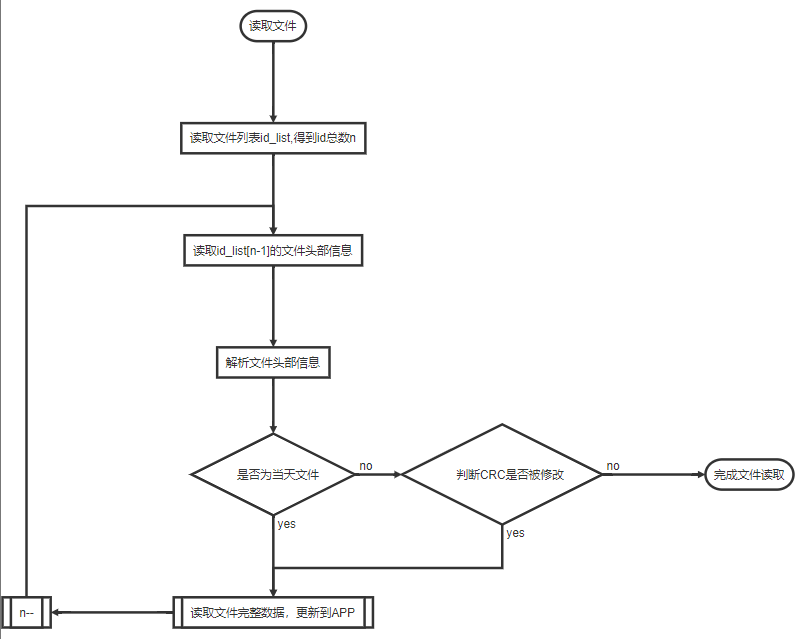
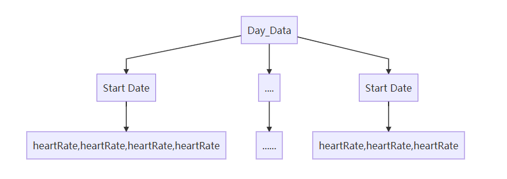
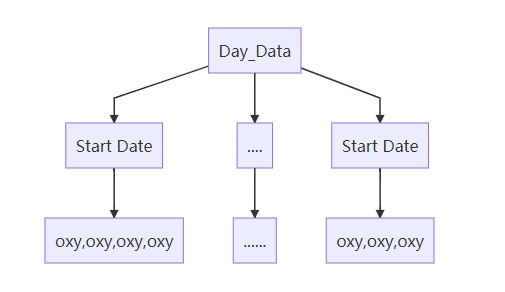
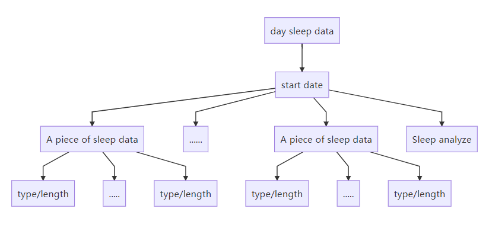
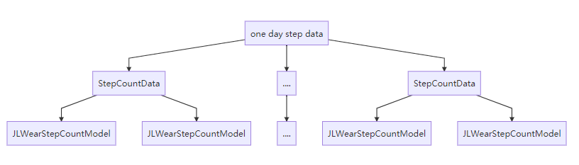
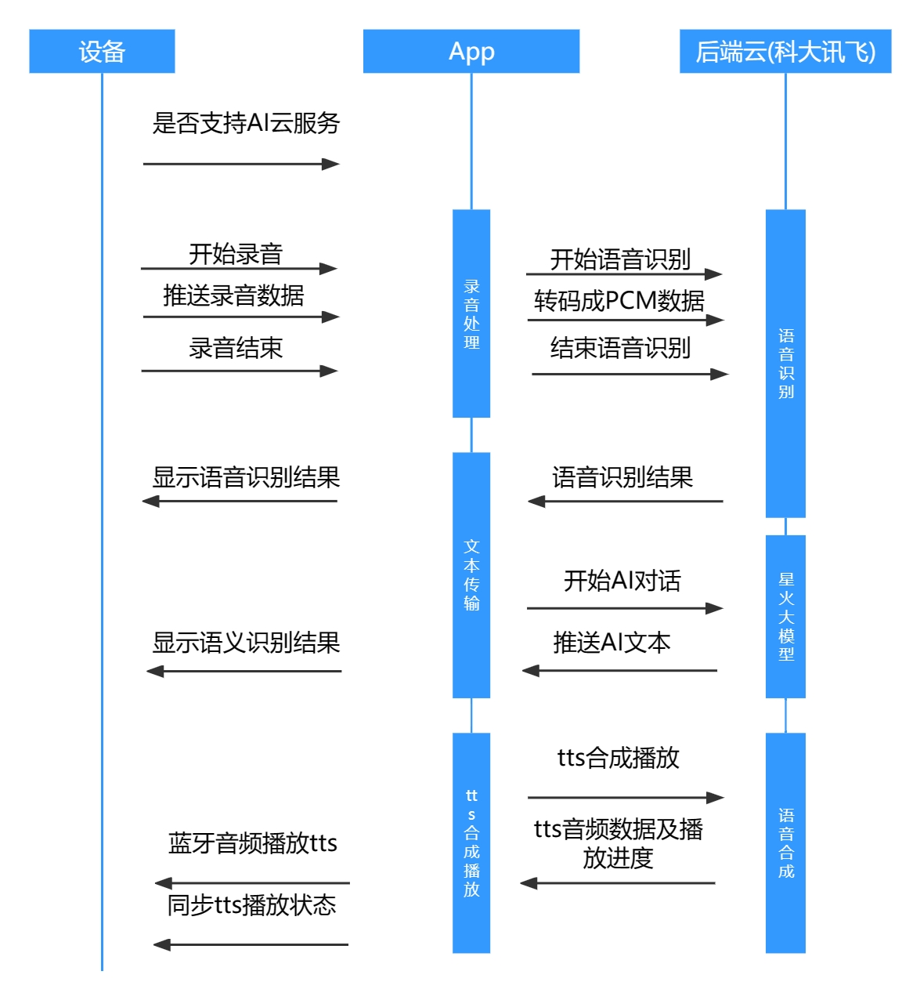
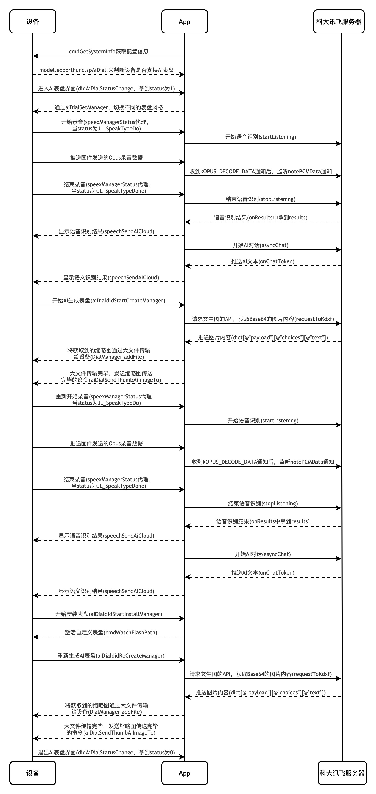
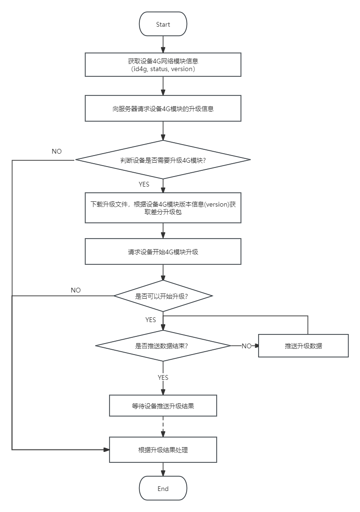

2.功能说明
2.1 文件管理
2.1.1 功能描述
管理设备sd、usb、flash的文件，可以实现文件的浏览、删除、文件传输、格式化等功能。典型功能：音乐管理。
2.1.2 使用Demo
2.1.2.1 文件浏览
// 添加文件目录浏览监听，查看某一目录下的文件夹及文件会在这里以array的方式返回
[[[JL_RunSDK sharedMe] mBleEntityM].mCmdManager.mFileManager cmdBrowseMonitorResult:^(NSArray<JLModel_File *> * _Nullable array, JL_BrowseReason reason) {
switch (reason) {
case JL_BrowseReasonReading:{
}break;
case JL_BrowseReasonCommandEnd:{
}break;
case JL_BrowseReasonFolderEnd:{
}break;
case JL_BrowseReasonBusy:{
}break;
case JL_BrowseReasonDataFail:{
}break;
case JL_BrowseReasonPlaySuccess:{
}break;
case JL_BrowseReasonUnknown:{
}
default:
break;
}
}];
// 请求文件夹或播放文件
JL_EntityM *entity = [[JL_RunSDK sharedMe] mBleEntityM];
JLModel_Device *model = [entity.mCmdManager outputDeviceModel];
JLModel_File *fileModel = [JLModel_File new];
fileModel.fileType = JL_BrowseTypeFolder;
NSMutableArray *mutbA = [NSMutableArray new];
NSMutableDictionary *sDict = saveDict[bleUuid];
switch (nowType) {
case JL_CardTypeUSB:{
fileModel.cardType = JL_CardTypeUSB;
fileModel.fileName = @"USB";
fileModel.folderName = @"USB";
fileModel.fileHandle = model.handleUSB;
fileModel.fileClus = 0;
[mutbA addObject:fileModel];
[sDict setValue:mutbA forKey:USB_Card];
}break;
case JL_CardTypeSD_0:{
fileModel.cardType = JL_CardTypeSD_0;
fileModel.fileName = @"SD Card";
fileModel.folderName = @"SD Card";
fileModel.fileHandle = model.handleSD_0;
fileModel.fileClus = 0;
[mutbA addObject:fileModel];
[sDict setValue:mutbA forKey:SD_0_Card];
}break;
case JL_CardTypeSD_1:{
fileModel.cardType = JL_CardTypeSD_1;
fileModel.fileName = @"SD Card 2";
fileModel.folderName = @"SD Card 2";
fileModel.fileHandle = model.handleSD_1;
fileModel.fileClus = 0;
[mutbA addObject:fileModel];
[sDict setValue:mutbA forKey:SD_1_Card];
}break;
case JL_CardTypeFLASH:{
fileModel.cardType = JL_CardTypeFLASH;
fileModel.fileName = @"FLASH";
fileModel.folderName = @"FLASH";
fileModel.fileHandle = model.handleFlash;
fileModel.fileClus = 0;
[mutbA addObject:fileModel];
[sDict setValue:mutbA forKey:FLASH_Card];
}break;
default:
break;
}
if (fileModel.fileType == JL_BrowseTypeFile) {
// play music
[[[JL_RunSDK sharedMe] mBleEntityM].mCmdManager.mFileManager cmdBrowseModel:fileModel Number:1 Result:nil];
} else {
// request files
[[[JL_RunSDK sharedMe] mBleEntityM].mCmdManager.mFileManager cmdBrowseModel:fileModel Number:10 Result:nil];
}
2.1.2.2 文件删除
// 一般来说，文件删除是发生在2.1.2.1文件浏览获得JLModel_File对象之后进行的
JL_EntityM *entity = [[JL_RunSDK sharedMe] mBleEntityM];
[JL_Tools subTask:^{ //异步执行
[entity.mCmdManager.mFileManager cmdDeleteFileModels:@[(JLModel_File *)model]];
[JL_Tools mainTask:^{ //主线程
NSLog(@"删除成功");
/*--- 清除设备缓存 ---*/
[entity.mCmdManager cmdCleanCacheType:JL_CardTypeUSB];
[entity.mCmdManager cmdCleanCacheType:JL_CardTypeSD_0];
[entity.mCmdManager cmdCleanCacheType:JL_CardTypeSD_1];
//或者清除其他JL_CardType类型设备缓存
//更新UI界面
}];
}];
2.1.2.3 文件下载（APP->设备)
typedef NS_ENUM(NSInteger, JLFileTransferOperateType) {
JLFileTransferOperateTypeNoSpace = 0, //空间不足
JLFileTransferOperateTypeStart = 1, //开始操作
JLFileTransferOperateTypeDoing = 2, //正在操作
JLFileTransferOperateTypeFail = 3, //操作失败
JLFileTransferOperateTypeSuccess = 4, //操作成功
JLFileTransferOperateTypeUnnecessary = 5, //无需重复打开文件系统
};
typedef void(^JLFileTransferBK)(JLFileTransferOperateType type, float progress);
/**
* 发送文件到flash（音乐文件管理中不使用该功能）
*/
+ (void)sendFileToFlashWithFileName:(NSString* )fileName withResult:(JLFileTransferBK)result {
if (fileName.length < 1 || !fileName) {
return;
}
// 沙盒路径
NSString *filePath = [JL_Tools createOn:NSLibraryDirectory MiddlePath:@"" File:fileName];
[JL_Tools subTask:^{
JL_RunSDK *bleSDK = [JL_RunSDK sharedMe];
JL_ManagerM *mCmdManager = bleSDK.mBleEntityM.mCmdManager;
__block uint8_t m_flag = 0;
NSData *fileData = [NSData dataWithContentsOfFile:filePath];
[mCmdManager.mFlashManager cmdInsertFlashPath:fileName Size:(uint32_t)fileData.length
Flag:0x01 Result:^(uint8_t flag) {
m_flag = flag;
}];
if (m_flag != 0) {
NSLog(@"--->insertFileNameForFlashWithFilePath Insert Fail.");
[JL_Tools mainTask:^{
if (result) { result(JLFileTransferOperateTypeFail, 0.0); }
}];
} else {
//传输到flash失败，转为传输到SD卡、USB
[self sendFileWithFileName:fileName withResult:result];
}
}];
}
/**
* 发送文件到SD卡、USB
*/
+ (void)sendFileWithFileName:(NSString* )fileName withResult:(JLFileTransferBK)result {
if (fileName.length < 1 || !fileName) {
return;
}
JLFileTransferBK result_bk = result;
JL_RunSDK *bleSDK = [JL_RunSDK sharedMe];
JL_ManagerM *mCmdManager = bleSDK.mBleEntityM.mCmdManager;
// 设置文件传输句柄为SD1，其他同理可选择SD2、USB。设置完成后即可传输文件到响应句柄之下
[mCmdManager.mFileManager setCurrentFileHandleType:JL_FileHandleTypeSD_1];
// 若当前方法用于传输联系人文件，则改为以下设置句柄的方式，其中 getContactTargetDev 的实现方法在2.5.2.1中有描述
// [mCmdManager setCurrentFileHandleType:[self getContactTargetDev]];
// 文件传输之前需要通知设备准备传输环境
[mCmdManager.mFileManager cmdPreEnvironment:0x00 Result:^(NSArray * _Nullable array) {
JL_CMDStatus st = [array[0] intValue];
if (st == JL_CMDStatusSuccess) {
NSString *path = [JL_Tools findPath:NSLibraryDirectory MiddlePath:@"" File:fileName];
// 需先通知固件删除该文件
[mCmdManager.mFileManager cmdFileDeleteWithName:fileName Result:^(NSArray * _Nullable array) {
JL_CMDStatus st = [array[0] intValue];
if (st == JL_CMDStatusSuccess) {
// 开始文件传输
[mCmdManager.mFileManager cmdBigFileData:path WithFileName:fileName Result:^(JL_BigFileResult result, float progress) {
[JL_Tools mainTask:^{
if (result == JL_BigFileTransferOutOfRange || result == JL_BigFileTransferFail || result == JL_BigFileCrcError || result == JL_BigFileTransferNoResponse) {
if (result_bk) {result_bk(JLFileTransferOperateTypeFail, 0.0);}
}
if (result == JL_BigFileTransferStart) {
if (result_bk) {result_bk(JLFileTransferOperateTypeStart, 0.0);}
}
if (result == JL_BigFileTransferDownload) {
NSLog(@"---> Progress: %.2f【%d】",progress,result);
if (result_bk) {result_bk(JLFileTransferOperateTypeDoing, progress);}
}
if (result == JL_BigFileTransferEnd) {
if (result_bk) {result_bk(JLFileTransferOperateTypeSuccess, 1.0);}
}
}];
}];
} else {
[JL_Tools mainTask:^{
if (result_bk) {result_bk(JLFileTransferOperateTypeFail, 0.0);}
}];
}
}];
} else {
[JL_Tools mainTask:^{
if (result_bk) {result_bk(JLFileTransferOperateTypeFail, 0.0);}
}];
}
}];
}
2.1.2.4 文件读取（设备->app）
#pragma mark --->【文件传输 固件-->APP】
#pragma mark 1.监听固件的文件数据
-(void)cmdFileDataMonitorResult:(JL_FILE_DATA_BK __nullable)result;
#pragma mark 2.允许固件传输文件数据
-(void)cmdAllowFileData;
#pragma mark 3.拒绝固件传输文件数据
-(void)cmdRejectFileData;
#pragma mark 4.停止固件传输文件数据
-(void)cmdStopFileData;
2.1.2.5 格式化
/*--- 设备句柄的获取 ---*/
JLModel_Device *model = [mBleEntityM.mCmdManager outputDeviceModel];
NSString *handleUSB = model.handleUSB;
NSString *handleSD_0 = model.handleSD_0;
NSString *handleSD_1 = model.handleSD_1;
NSString *handleFlash = model.handleFlash;
NSString *handleFlash2 = model.handleFlash2;
// DialManager.h
/// 格式化外部Flash操作
/// @param handle 设备句柄，选择以上其一。
/// @param result 操作
+(void)formatFlash:(NSString*)handle Result:(DialOperateBK)result;
2.1.3 特殊操作（需要设备端配置）
使用以下接口时，请和固件端开发人员沟通是否支持。
2.1.3.1 通过文件名删除文件
// 该方法基本被废弃，只能用于删除联系人文件@"CALL.txt"，如果是删除其他文件则行为无效
-(void)cmdFileDeleteWithName:(NSString*)name Result:(JL_CMD_RESPOND __nullable)result;
2.1.3.2 通过文件名读取文件
// 该方法基本被废弃，详细用法请看2.5.2.1 读取联系人
-(void)cmdFileReadContentWithName:(NSString*)name Result:(JL_FILE_CONTENT_BK __nullable)result;
2.1.4 注意事项
无
2.2 小文件传输
2.2.1 功能描述
适用于体积比较小的文件，从APP传输给设备端，例如：联系人、运动记录、心率数据、血氧数据、睡眠数据、消息数据、天气数据、通话记录、步数数据、体重数据。
2.2.2 使用Demo
2.2.2.1 文件列表查询
//文件类型有以下几种，查询时候需要选择其一，
typedef NS_ENUM(UInt8, JL_SmallFileType) {
JL_SmallFileTypeContacts = 0x01, //联系人
JL_SmallFileTypeMotionRecord = 0x02, //运动记录
JL_SmallFileTypeHeartRate = 0x03, //心率数据
JL_SmallFileTypeSpoData = 0x04, //血氧数据
JL_SmallFileTypeSleepData = 0x05, //睡眠数据
JL_SmallFileTypeMassage = 0x06, //消息数据
JL_SmallFileTypeWeather = 0x07, //天气数据
JL_SmallFileTypeCallLog = 0x08, //通话记录
JL_SmallFileTypeStepCount = 0x09, //步数数据
JL_SmallFileTypeWeight = 0xFF, //体重数据
};
/*--- 查询小文件列表 ---*/
//@param type 文件类型
[mBleEntityM.mCmdManager.mSmallFileManager cmdSmallFileQueryType:JL_SmallFileTypeContacts
Result:^(NSArray<JLModel_SmallFile *> * _Nullable array) {
//array返回文件数组【JLModel_SmallFile】类；
}];
/*--- 注意事项 ----*/
//1、mBleEntityM在文档1.3.1里有介绍；
//2、返回的列表数组是JLModel_SmallFile类是对小文件模型的抽象，
@interface JLModel_SmallFile : NSObject
@property(nonatomic,assign)JL_SmallFileType file_type; //文件类型
@property(nonatomic,assign)uint8_t file_ver; //文件版本号
@property(nonatomic,assign)uint16_t file_id; //文件ID（定位某个文件）
@property(nonatomic,assign)uint16_t file_size; //文件大小
2.2.2.2 新增文件
/*--- 新增小文件 ---*/
NSData *pathData = [NSData dataWithContentsOfFile:@"文件路径"];
//@param data 文件数据内容
//@param type 文件类型
[mBleEntityM.mCmdManager.mSmallFileManager cmdSmallFileNew:pathData Type:JL_SmallFileTypeContacts
Result:^(JL_SmallFileOperate status, float progress,
uint16_t fileID) {
[JL_Tools mainTask:^{
if (status == JL_SmallFileOperateDoing) {
NSLog(@"--->小文件传输进度：%.2f%%",progress*100.0);
}
if (status == JL_SmallFileOperateSuceess) {
NSLog(@"--->小文件新增成功");
}
if (status != JL_SmallFileOperateSuceess &&
status != JL_SmallFileOperateDoing){
NSLog(@"--->小文件新增失败");
}
}];
}];
2.2.2.3 读取文件
/*--- 创建一个NSData存储文件数据 ---*/
NSMutableData *mData = [NSMutableData new];
/*--- 读取小文件 ---*/
//@param file 需要读取的文件，JLModel_SmallFile类
[mBleEntityM.mCmdManager.mSmallFileManager cmdSmallFileRead:smallFile Result:^(JL_SmallFileOperate status,float progress, NSData * _Nullable data) {
if (data.length > 0) [mData appendData:data];
if (status == JL_SmallFileOperateDoing) {
NSLog(@"---> 小文件读取【Call.txt】开始：%lu",(unsigned long)data.length);
}
if (status != JL_SmallFileOperateDoing &&
status != JL_SmallFileOperateSuceess) {
NSLog(@"---> 小文件读取【Call.txt】失败~");
}
if (status == JL_SmallFileOperateSuceess) {
NSLog(@"---> 小文件读取【Call.txt】成功！");
}
2.2.2.4 修改文件
/*--- 更新小文件 ---*/
NSData *pathData = [NSData dataWithContentsOfFile:@"文件路径"];
//@param file 需要读取的文件，JLModel_SmallFile类
//@param data 文件数据内容
[mBleEntityM.mCmdManager.mSmallFileManager cmdSmallFileUpdate:smallFile Data:pathData Result:^(JL_SmallFileOperate status, float progress) {
[JL_Tools mainTask:^{
if (status == JL_SmallFileOperateDoing) {
NSLog(@"--->小文件更新进度：%.2f%%",progress*100.0);
}
if (status == JL_SmallFileOperateSuceess) {
NSLog(@"--->小文件更新成功");
}
if (status != JL_SmallFileOperateSuceess &&
status != JL_SmallFileOperateDoing){
NSLog(@"--->小文件更新失败");
}
}];
}];
2.2.2.5 删除文件
/*--- 删除小文件 ---*/
//@param file 需要读取的文件，JLModel_SmallFile类
[mBleEntityM.mCmdManager.mSmallFileManager cmdSmallFileDelete:smallFile Result:^(JL_SmallFileOperate status) {
if (status == JL_SmallFileOperateSuceess){
NSLog(@"--->小文件删除成功");
}
if (status == JL_SmallFileOperateFail){
NSLog(@"--->小文件删除失败");
}
}];
2.3 表盘操作
概述
涉及到JLDialUnit.framework内接口，可以实现查询文件、添加表盘、删除表盘、替换表盘、格式化外部Flash、更新表盘资源；
涉及到JL_BLEKit.framework内接口，可以实现设置表盘、监听设备表盘变化、读取外置卡的文件内容；
open表盘文件系统 mBleEntityM在文档连接设备里有介绍；
JL_ManagerM *mCmdManager = mBleEntityM.mCmdManager;
/*--- 打开表盘文件系统 ---*/
//@param manager 命令中心类
[DialManager openDialFileSystemWithCmdManager:mCmdManager withResult:^(DialOperateType type, float progress) {
if (type == DialOperateTypeUnnecessary) {
NSLog(@"无需重复打开表盘文件系统");
return;
} else if (type == DialOperateTypeFail) {
NSLog(@"--->打开表盘文件系统失败!");
return;
}
}];
2.3.1 遍历文件列表
2.3.1.1 功能描述
查看手表内置文件内容列表。
2.3.1.2 使用Demo
[DialManager listFile:^(DialOperateType type, NSArray * _Nullable array) {
//数组内元素为字符串，大致分为两种前缀 @"WATCH" 和 @"BGP_W"，前者为普通表盘，后者为自定义表盘背景。
//数组样例：@{@"WATCH",@"WATCH1",@"WATCH3",@"BGP_W001",@"BGP_W0002",@"BGP_W003"}
for (NSString *name in array) {
if ([name hasPrefix:@"WATCH"]) {}
if ([name hasPrefix:@"BGP_W"]) {}
}
}];
2.3.1.3 注意事项
1.连接设备成功后，必须先获取设备信息（详情在文档连接设备）。 2.获取玩设备信息后，方可调用以上[DialManager openDialFileSystemWithCmdManager:]打开表盘文件系统的接口。 3.而且，每次连接设备成功–>获取设备信息–>打开表盘文件系统（都需执行一次）。 4.只有打开了表盘操作系统，才能操作表盘相关的全部API。
2.3.2 插入表盘
2.3.2.1 功能描述
插入新的表盘文件
2.3.2.2 使用Demo
//所有表盘操作名字，都需要加"/"斜杠前缀，例如@“/WATCH1” ,@“/BGP_W001”
NSString *wName = [NSString stringWithFormat:@"/%@",@"WATCH1"];
//表盘的数据内容
NSData *pathData = [NSData dataWithContentsOfFile:path];
[DialManager addFile:wName Content:pathData
Result:^(DialOperateType type, float progress)
{
if (type == DialOperateTypeNoSpace) {
NSLog(@"空间不足!");
}
if (type == DialOperateTypeFail) {
NSLog(@"添加失败!");
}
if (type == DialOperateTypeDoing) {
NSString *txt = [NSString stringWithFormat:@"添加进度:%.1f%%",progress*100.0f];
}
if (type == DialOperateTypeSuccess) {
NSLog(:@"添加完成!");
}
}];
2.3.2.3 注意事项
文件路径必须存在
自定义表盘背景必须通过转换工具进行转换
2.3.3 删除表盘
2.3.3.1 功能描述
删除已存在的表盘文件
2.3.3.2 使用Demo
//所有表盘操作名字，都需要加"/"斜杠前缀，例如@“/WATCH1” ,@“/BGP_W001”
NSString *wName = [NSString stringWithFormat:@"/%@",@"WATCH1"];
[DialManager deleteFile:wName Result:^(DialOperateType type, float progress) {
if (type == DialOperateTypeFail) {
NSLog(@"删除失败！");
}
if (type == DialOperateTypeSuccess) {
NSLog(@"删除完成！");
}
}];
2.3.3.3 注意事项
所有表盘操作名字，都需要加“/”斜杠前缀，例如@“/WATCH1” ,@“/BGP_W001”
2.3.4 获取当前表盘信息
2.3.4.1 功能描述
获取当前表盘名字
2.3.4.2 使用Demo
//读取当前表盘名字
[mBleEntityM.mCmdManager.mFlashManager cmdWatchFlashPath:nil Flag:JL_DialSettingReadCurrentDial
Result:^(uint8_t flag, uint32_t size,
NSString * _Nullable path,
NSString * _Nullable describe) {
[JL_Tools mainTask:^{
NSLog(@"--->当前表盘名字：%@",path);
}];
}];
2.3.5 获取表盘额外信息
2.3.5.1 功能描述
获取表盘文件的额外信息，比如版本，服务器对应的UUID等
2.3.5.2 使用Demo
//获取表盘版本号，所有表盘操作名字都需要加"/"斜杠前缀，例如@"/WATCH2",如下所示就是获取WATCH2表盘版本号。
[mBleEntityM.mCmdManager.mFlashManager cmdWatchFlashPath:@"/WATCH2" Flag:JL_DialSettingVersion
Result:^(uint8_t flag, uint32_t size,
NSString * _Nullable path,
NSString * _Nullable describe) {
[JL_Tools mainTask:^{
NSArray *arr = [path componentsSeparatedByString:@","];
NSLog(@"--->当前表盘版本：%@",arr[0]);
NSLog(@"--->当前表盘UUID：%@",arr[1]);
}];
}];
2.3.6 设置当前使用表盘
2.3.6.1 功能描述
设置当前使用表盘，通过此功能切换表盘。
2.3.6.2 使用Demo
//切换表盘，所有表盘操作名字都需要加"/"斜杠前缀，例如@"/WATCH2",如下所示就是切换至WATCH2表盘。
[mBleEntityM.mCmdManager.mFlashManager cmdWatchFlashPath:@"/WATCH2" Flag:JL_DialSettingSetDial
Result:^(uint8_t flag, uint32_t size,
NSString * _Nullable path,
NSString * _Nullable describe) {
[JL_Tools mainTask:^{
if (flag == 0) {
NSLog(@"切换表盘成功~");
}else{
NSLog(@"切换表盘失败~");
}
}];
}];
2.3.7 获取表盘自定义背景信息
2.3.7.1 功能描述
获取指定表盘对应的自定义背景信息
2.3.7.2 使用Demo
//获取表盘的自定义背景名字，所有表盘操作名字都需要加"/"斜杠前缀，例如@"/WATCH2",如下所示则获取WATCH2表盘对应的自定义背景名字。
[mBleEntityM.mCmdManager.mFlashManager cmdWatchFlashPath:@"/BGP_W001" Flag:JL_DialSettingGetDialName
Result:^(uint8_t flag, uint32_t size,
NSString * _Nullable path,
NSString * _Nullable describe) {
[JL_Tools mainTask:^{
if (flag == 0) {
NSLog(@"操作成功~");
NSLog(@"对应的自定义背景：%@",path);
}else{
NSLog(@"操作失败~");
}
}];
}];
2.3.7.3 注意事项
获取表盘的自定义背景名字，所有表盘操作名字都需要加”/”斜杠前缀，例如@”/WATCH2”,如下所示则获取WATCH2表盘对应的自定义背景名字。
2.3.8 使能表盘自定义背景
2.3.8.1 功能描述
为当前使用的表盘使能指定的自定义背景
2.3.8.2 使用Demo
//激活自定义表盘背景，所有表盘操作名字都需要加"/"斜杠前缀，例如@"/BGP_W001",如下所示就是将当前表盘的背景切换成BGP_W001。
//假如path赋值@"/null",解除当前复原当前表盘背景，解绑自定义背景。
[mBleEntityM.mCmdManager.mFlashManager cmdWatchFlashPath:@"/BGP_W001" Flag:JL_DialSettingActivateCustomDial
Result:^(uint8_t flag, uint32_t size,
NSString * _Nullable path,
NSString * _Nullable describe) {
[JL_Tools mainTask:^{
if (flag == 0) {
NSLog(@"激活成功~");
}else{
NSLog(@"激活失败~");
}
}];
}];
2.3.8.3 注意事项
1、激活自定义表盘背景，所有表盘操作名字都需要加”/”斜杠前缀，例如@”/BGP_W001”,如下所示就是将当前表盘的背景切换成BGP_W001。
2、假如path赋值@”/null”,解除当前复原当前表盘背景，解绑自定义背景。
2.3.9 资源更新
2.3.9.1 功能描述
更新设备资源文件
2.3.9.2 使用Demo
//升级资源包的路径
NSString *updatePath = [JL_Tools find:@"upgrade_1.0.0.0.zip"];
//@param updatePath 升级资源包的路径
//@param nowList 这是调用查询表盘列表返回的数组（详情文档2.2.3）
[DialManager updateResourcePath:updatePath List:nowList
Result:^(DialUpdateResult updateResult, NSArray * _Nullable array,
NSInteger index, float progress){
[JL_Tools mainTask:^{
if (updateResult == DialUpdateResultReplace) {
NSString *fileName = array[index];
self.updateTxt.text = [NSString stringWithFormat:@"%@: %@(%d/%lu)...",kJL_TXT("正在更新表盘"),
fileName,(int)index+1,(unsigned long)array.count];
self.progressTxt.text = [NSString stringWithFormat:@"%.1f%%",progress*100.0];
self.progressView.progress = progress;
return;
}
if (updateResult == DialUpdateResultAdd){
NSString *fileName = array[index];
self.updateTxt.text = [NSString stringWithFormat:@"%@: %@(%d/%lu)...",kJL_TXT("正在传输新表盘"),
fileName,(int)index+1,(unsigned long)array.count];
self.progressTxt.text = [NSString stringWithFormat:@"%.1f%%",progress*100.0];
self.progressView.progress = progress;
return;
}
if (updateResult == DialUpdateResultFinished) self.updateTxt.text = kJL_TXT("资源更新完成");
if (updateResult == DialUpdateResultNewest) self.updateTxt.text = kJL_TXT("资源已是最新");
if (updateResult == DialUpdateResultInvalid) self.updateTxt.text = kJL_TXT("无效资源文件");
if (updateResult == DialUpdateResultEmpty) self.updateTxt.text = kJL_TXT("资源文件为空");
[JL_Tools delay:1.0 Task:^{
NSLog(@"---->Update result：%@ ",self.updateTxt.text);
if (result) result();
}];
}];
}];
2.3.9.3 注意事项
确保压缩包文件正常且完整
2.3.10 系统恢复
2.3.10.1 功能描述
系统出现异常时，用于恢复系统
2.3.10.2 使用Demo
//以下mBleEntityM在文档1.3.1里有介绍；
//还原系统
[mBleEntityM.mCmdManager.mFlashManager cmdFlashRecovery];
2.3.10.3 注意事项
禁止在系统正常运行的情况下，使用该接口
2.3.11 监听设备切换表盘
2.3.11.1 功能描述
监听设备切换的表盘
2.3.11.2 使用Demo
//设备更新表盘，监听以下通知返回当前设备切换的表盘名字，例如@"WATCH2"。
extern NSString *kJL_MANAGER_WATCH_FACE;
//监听的方法例子：
-(void)noteWatchFace:(NSNotification*)note{
NSDictionary *dict = [note object];
NSString *text = dict[kJL_MANAGER_KEY_OBJECT];
NSLog(@"--->设备更新表盘：%@",text);
}
2.3.11.3 注意事项
1、在UI层监听就可以了。
2.3.12 图像转换
2.3.12.1 功能描述
普通PNG图片(RGB, ARGB)转换成表盘背景文件
2.3.12.2 示例代码
#import <JLBmpConvertKit/JLBmpConvertKit.h>
+(void)makeDialwithName:(NSString *)watchBinName withSize:(CGSize)size image:(UIImage *)basicImage{
NSData *imageData = [JLBmpConvert resizeImage:basicImage andResizeTo:CGSizeMake(size.width, size.height)];
UIImage *image = [UIImage imageWithData:imageData];
NSString *imagePath = [NSSearchPathForDirectoriesInDomains(NSDocumentDirectory, NSUserDomainMask, true) firstObject];
imagePath = [imagePath stringByAppendingPathComponent:@"basic.png"];
[JL_Tools writeData:imageData fillFile:imagePath];
//带有alpha的图片转换，方式一
[JLBmpConvert covert:JLBmpConvertType701N_ARBG Image:image completion:^(NSData * _Nullable outFileData, NSError * _Nullable error) {
if (error) {
kJLLog(JLLOG_DEBUG, @"--->PNG BIN【%@】is Error!", watchBinName);
return;
}
kJLLog(JLLOG_DEBUG, @"--->PNG BIN【%@】is OK!", watchBinName);
}];
//带有有alpha的图片转换，方式二
//这里的 outFilePath 是可选项，如果需要指定输出路径可以设置
[JLBmpConvert covert:JLBmpConvertType701N_ARBG inFilePath:imagePath outFilePath:nil completion:^(NSString * _Nonnull inFilePath, NSString * _Nullable outFilePath, NSError * _Nullable error) {
if (error) {
kJLLog(JLLOG_DEBUG, @"--->PNG BIN【%@】is Error!", watchBinName);
return;
}
kJLLog(JLLOG_DEBUG, @"--->PNG BIN【%@】is OK!", watchBinName);
}];
}
2.3.12.3 注意事项
输入图像的尺寸必须与手表屏幕尺寸一致，可通过 ` JLDialInfoExtentModel ` 获取
输入图像的大小尽量小点
2.4 消息推送（ANCS）
2.4.1 功能描述
本功能使用苹果自带协议ANCS，ANCS是Apple Notification Center Service的简称，中文为苹果通知中心服务。
ANCS是苹果让周边蓝牙设备（手环、手表等）可以通过低功耗蓝牙访问IOS设备（iphone、ipad等）上的各类通知提供的一种简单方便的机制。
ANCS是基于BLE协议中的通用属性协议（Generic Attribute Profile,GATT）协议实现的，他是GATT协议的一个子集。在ANCS协议中，IOS设备作为gatt-server,而周边设备作为gatt client来连接和使用server提供的其他services。
详细的可以参考官网上的解释 ANCS spec 。
ANCS带来的影响：
iOS设备不需要再去自行实现消息通知操作相关内容，而是通过蓝牙设备来实现。
iOS设备无法从代码层面物理上断开BLE连接。
无法断开时，不能通过(centerManager.scanForPeripherals(withServices: nil, options: nil))去搜索到设备。
2.4.2 解决方案Demo
目前除了手动解除绑定(忽略设备)以外，没有其他的方法可以解除绑定。
iOS提供了 central.retrievePeripherals(withIdentifiers:[uuid]) 的方法来获取已连接上的ANCS设备。
应用Demo参考：
import Foundation
import CoreBluetooth
class BLEManager: NSObject,CBCentralManagerDelegate,CBPeripheralDelegate{
lazy var centerManager:CBCentralManager = {
CBCentralManager(delegate: self, queue: DispatchQueue.main)
}()
var myPeripheral:CBPeripheral?
private var list:[CBPeripheral] = []
override init() {
super.init()
}
func start(){
centerManager.scanForPeripherals(withServices: nil, options: nil)
print("⚠️ Need to hasPerfix your ble device's name or it maybe found nothing")
DispatchQueue.main.asyncAfter(deadline: .now()+2, execute: {
if let item = self.list.first {
if item.state == .disconnected {
self.centerManager.connect(item, options: nil)
}
}
})
}
func centralManagerDidUpdateState(_ central: CBCentralManager) {
switch central.state {
case .unknown:
break
case .resetting:
break
case .unsupported:
break
case .unauthorized:
break
case .poweredOff:
break
case .poweredOn:
centerManager.scanForPeripherals(withServices: nil, options: nil)
@unknown default:
break
}
}
func centralManager(_ central: CBCentralManager, didDiscover peripheral: CBPeripheral, advertisementData: [String : Any], rssi RSSI: NSNumber) {
if ((peripheral.name?.hasPrefix("AC701N_")) != nil){
if peripheral.name == "AC701N_XXXX" {
centerManager.stopScan()
list.append(peripheral)
print("Did found:\n\(peripheral)")
}
}
}
func centralManager(_ central: CBCentralManager, didConnect peripheral: CBPeripheral) {
self.myPeripheral = peripheral
self.myPeripheral?.delegate = self
self.myPeripheral?.discoverServices(nil)
}
func centralManager(_ central: CBCentralManager, didDisconnectPeripheral peripheral: CBPeripheral, error: Error?) {
print("disconnect Ble in this application !")
print("The Ble ANCS device is alway here,you can watch it in system setting")
let uuid = UUID(uuid: peripheral.identifier.uuid)
let array = central.retrievePeripherals(withIdentifiers:[uuid])
for item in array {
print("Now the ble is founded in here:\n\(item)")
DispatchQueue.main.asyncAfter(deadline: .now()+10) {
print("Here is to reconnect by 10 sec.")
self.centerManager.connect(item, options: nil)
}
}
}
func peripheral(_ peripheral: CBPeripheral, didDiscoverServices error: Error?) {
guard let services = peripheral.services else{
return
}
for service in services {
if service.uuid.uuidString == "AE00" {
peripheral.discoverCharacteristics(nil, for: service)
}
}
}
func peripheral(_ peripheral: CBPeripheral, didDiscoverCharacteristicsFor service: CBService, error: Error?) {
guard let charts = service.characteristics else { return }
for chart in charts {
if chart.uuid.uuidString == "AE01" {
print("get wirte chart");
}
if chart.uuid.uuidString == "AE02" {
print("get read chart")
}
}
print("Please make sure pair in your phone ,it will disconnect by 10 sec.")
DispatchQueue.main.asyncAfter(deadline: .now()+10) {
print("go to cancel connect BLE")
self.centerManager.cancelPeripheralConnection(peripheral)
}
}
}
2.4.3 注意事项
1.设备通过A应用连接手机，A应用内无法通过API直接断开设备，当杀死应用后，设备会处于一直连接着手机的情况。 这个时候只能通过A应用retrieveconnectedperipher去搜索出来，重新进行连接。
2.在情景1的A应用杀死时设备还处于连接手机系统，B应用/其他应用通过retrieveconnectedperipher搜索出来设备，但不可以获取设备的service。
3.在同一应用，同一次连接BLE下，如果设备蓝牙mac地址不变，短期内多次发起断连请求，iOS系统不会去重复请求设备的Service uuid，读到的仅仅是缓存的特征值。
2.5 联系人管理
2.5.1 功能描述
管理设备上的联系人数据，支持读取和更新操作
2.5.2 使用demo
2.5.2.1 读取联系人
// 获取联系人列表
- (void)getContactsList {
NSMutableData *mData = [NSMutableData new];
// 获取的联系人会保存在这个NSMutableArray中
self->persons = [NSMutableArray<JHPersonModel * > new];
JL_RunSDK *bleSDK = [JL_RunSDK sharedMe];
JL_ManagerM *mCmdManager = bleSDK.mBleEntityM.mCmdManager;
if ([mCmdManager outputDeviceModel].smallFileWayType == JL_SmallFileWayTypeNO) {
[mCmdManager.mFileManager setCurrentFileHandleType:[self getContactTargetDev]];
// 大文件传输中，联系人文件名固定为CALL.txt
[mCmdManager.mFileManager cmdFileReadContentWithName:@"CALL.txt" Result:^(JL_FileContentResult result, uint32_t size, NSData * _Nullable data,float progress) {
if (result == JL_FileContentResultStart) {
NSLog(@"---> 读取【Call.txt】开始.");
} else if (result == JL_FileContentResultReading) {
NSLog(@"---> 读取【Call.txt】Reading");
if (data.length > 0) {
[mData appendData:data];
}
} else if(result == JL_FileContentResultEnd) {
NSLog(@"---> 读取【Call.txt】结束");
if (mData == nil || mData.length < 40) {
return;
}
[self outputContactsListData:mData];
// 更新界面
} else if (result == JL_FileContentResultCancel) {
NSLog(@"---> 读取【Call.txt】取消");
} else if (result == JL_FileContentResultFail) {
NSLog(@"---> 读取【Call.txt】失败");
} else if (result == JL_FileContentResultNull) {
NSLog(@"---> 读取【Call.txt】文件为空");
[self displayContactsView];
} else if (result == JL_FileContentResultDataError) {
NSLog(@"---> 读取【Call.txt】数据出错");
}
}];
}else{
[JL_Tools subTask:^{
__block JLModel_SmallFile *smallFile = nil;
/*--- 查询小文件列表 ---*/
[self->mCmdManager.mSmallFileManager cmdSmallFileQueryType:JL_SmallFileTypeContacts
Result:^(NSArray<JLModel_SmallFile *> * _Nullable array) {
if (array.count > 0) smallFile = array[0];
[self->threadTimer_0 threadContinue];
}];
[self->threadTimer_0 threadWait];
if (smallFile == nil) return;
/*--- 读取小文件通讯录 ---*/
[self->mCmdManager.mSmallFileManager cmdSmallFileRead:smallFile
Result:^(JL_SmallFileOperate status,
float progress, NSData * _Nullable data) {
if (status == JL_SmallFileOperateDoing) {
NSLog(@"---> 小文件读取【Call.txt】开始：%lu",(unsigned long)data.length);
}
if (status != JL_SmallFileOperateDoing &&
status != JL_SmallFileOperateSuceess) {
NSLog(@"---> 小文件读取【Call.txt】失败~");
}
if (data.length > 0) [mData appendData:data];
if (status == JL_SmallFileOperateSuceess) {
NSLog(@"---> 小文件读取【Call.txt】成功！");
if (mData.length >= 40) {
[JL_Tools mainTask:^{
[self outputContactsListData:mData];
// 更新界面
}];
}
}
}];
}];
}
}
- (void)outputContactsListData:(NSData*)mData {
for (int i = 0; i <= mData.length - 40; i += 40) {
NSData *buf_name = [JL_Tools data:mData R:i L:20];
NSData *buf_number = [JL_Tools data:mData R:i+20 L:20];
NSString *nameStr = [[NSString alloc] initWithData:buf_name encoding:NSUTF8StringEncoding];
nameStr = [nameStr stringByReplacingOccurrencesOfString:@"\0" withString:@""];
nameStr = [nameStr stringByTrimmingCharactersInSet:[NSCharacterSet whitespaceCharacterSet]];
NSString *numberStr = [[NSString alloc] initWithData:buf_number encoding:NSUTF8StringEncoding];
numberStr = [numberStr stringByReplacingOccurrencesOfString:@"\0"withString:@""];
numberStr = [numberStr stringByTrimmingCharactersInSet:[NSCharacterSet whitespaceCharacterSet]];
JHPersonModel *model = [[JHPersonModel alloc] init];
model.fullName = nameStr;
model.phoneNum = numberStr;
[self->persons addObject:model];
}
}
/**
* 获取常用联系人传输句柄
*/
- (JL_FileHandleType)getContactTargetDev {
JL_RunSDK *mBleSDK = [JL_RunSDK sharedMe];
JL_EntityM *entity = [mBleSDK mBleEntityM];
JLModel_Device *deviceModel = [entity.mCmdManager outputDeviceModel];
if ([deviceModel.cardArray containsObject:@(JL_CardTypeFLASH2)]) {
return JL_FileHandleTypeFLASH2;
} else if ([deviceModel.cardArray containsObject:@(JL_CardTypeSD_1)]) {
return JL_FileHandleTypeSD_1;
} else if ([deviceModel.cardArray containsObject:@(JL_CardTypeSD_0)] && [deviceModel.cardArray containsObject:@(JL_CardTypeSD_1)]) {
return JL_FileHandleTypeSD_1;
} else if ([deviceModel.cardArray containsObject:@(JL_CardTypeSD_0)]) {
return JL_FileHandleTypeSD_0;
} else if ([deviceModel.cardArray containsObject:@(JL_CardTypeUSB)]) {
return JL_FileHandleTypeUSB;
}
return JL_FileHandleTypeSD_1;
}
2.5.2.2 更新联系人
/*
注意，使用本方法中的 sendFileToFlashWithFileName 和 sendFileWithFileName 为2.1.2.3的内容，其中 sendFileWithFileName 里面需打开把 getContactTargetDev 的部分打开
*/
- (void)syncContactsListToDevice {
NSString *path = [JL_Tools createOn:NSLibraryDirectory MiddlePath:@"" File:@"CALL.TXT"];
[JL_Tools writeData:[ContactsTool setContactsToData:persons] fillFile:path];
if ([mCmdManager outputDeviceModel].smallFileWayType == JL_SmallFileWayTypeNO) {
/*--- 原来通讯流程 ---*/
// getContactTargetDev 在 2.5.2.1 中有实现
if ([self getContactTargetDev] == JL_CardTypeFLASH2) {
// sendFileToFlashWithFileName 参考2.1.2.3
[self sendFileToFlashWithFileName:@"CALL.TXT" withResult:^(JLFileTransferOperateType type, float progress) {
if (type == JLFileTransferOperateTypeStart) {
[JLUI_Effect startLoadingView:@"同步中..." Delay:8.0];
}
if (type == JLFileTransferOperateTypeSuccess) {
NSLog(@"CALL.TXT 传输成功");
}
}];
} else {
// 使用前需把2.5.2.1中描述的 getContactTargetDev 的屏蔽打开
[self sendFileWithFileName:@"CALL.TXT" withResult:^(JLFileTransferOperateType type, float progress) {
if (type == JLFileTransferOperateTypeStart) {
[JLUI_Effect startLoadingView:@"同步中..." Delay:8.0];
}
if (type == JLFileTransferOperateTypeSuccess) {
NSLog(@"CALL.TXT 传输成功");
}
}];
}
} else {
/*--- 小文件方式传输通讯录 ---*/
[self smallFileSyncContactsListWithPath:path];
}
}
- (void)smallFileSyncContactsListWithPath:(NSString*)path {
[JLUI_Effect startLoadingView:@"同步中..." Delay:8.0];
[JL_Tools subTask:^{
__block JLModel_SmallFile *smallFile = nil;
/*--- 查询小文件列表 ---*/
[self->mCmdManager.mSmallFileManager cmdSmallFileQueryType:JL_SmallFileTypeContacts
Result:^(NSArray<JLModel_SmallFile *> * _Nullable array) {
if (array.count > 0) smallFile = array[0];
[self->threadTimer_1 threadContinue];
}];
[self->threadTimer_1 threadWait];
/*--- 先删除通讯录 ---*/
if (smallFile != nil) {
__block JL_SmallFileOperate status_del = 0;
[self->mCmdManager.mSmallFileManager cmdSmallFileDelete:smallFile
Result:^(JL_SmallFileOperate status) {
status_del = status;
[self->threadTimer_1 threadContinue];
}];
[self->threadTimer_1 threadWait];
if (status_del != JL_SmallFileOperateSuceess) {
[JL_Tools mainTask:^{
NSLog(@"--->小文件 CALL.TXT 传输失败");
}];
return;
}
}
/*--- 小文件传输文件 ---*/
NSData *pathData = [NSData dataWithContentsOfFile:path];
[self->mCmdManager.mSmallFileManager cmdSmallFileNew:pathData Type:JL_SmallFileTypeContacts
Result:^(JL_SmallFileOperate status, float progress,
uint16_t fileID) {
[JL_Tools mainTask:^{
if (status == JL_SmallFileOperateSuceess){
NSLog(@"--->小文件 CALL.TXT 传输成功");
}
if (status != JL_SmallFileOperateSuceess &&
status != JL_SmallFileOperateDoing){
NSLog(@"--->小文件 CALL.TXT 传输失败");
}
}];
}];
}];
}
2.5.3 注意事项
公版最多支持10个联系人，在开发过程中需要和固件协商支持的联系人数量
联系人于大文件传输和小文件传输不能同一时刻进行
联系人传输需要依赖固件有存储介质，所以在使用改接口时需要判断设备环境
更新联系人使用的方法sendFileWithFileName: 与发送文件（APP->设备）方法名字相同，在用于联系人2.1.2.3模块的时候需把发送文件（APP->设备）中描述的 getContactTargetDev 的屏蔽打开。
2.6 设备设置
2.6.1 功能描述
管理设备的设置功能 具体设置项有：传感器设置、久坐提醒、连续测量心率、运动心率提醒、睡眠检测、跌倒检测、抬腕检测、个人信息、蓝牙断开提醒。
接口说明
根据不同的传感器类型，通过JLWearable类的w_InquireDeviceFuncWith:withEntity:接口进行查询
// 如查询：传感器、连续测量心率、跌到监察
// 则对应的uint32_t 为：0x0000008A
// 即对应的Bit位指示为：0000 0000 0000 0000 0000 0000 1000 1010
// @param target 要查询的数组内容
// Bit0：保留（考虑是否用于做功能支持位）—— 0
// Bit1：传感器功能
// Bit2：久坐提醒
// Bit3：连续测量心率
// Bit4：运动心率提醒
// Bit5：压力自动检测
// Bit6：睡眠检测
// Bit7：跌到监察
// Bit8：抬腕监察
// Bit9：个人信息
// Bit10：蓝牙断开提醒
// @param entity 当前的entity 本方法的返回结果，需要接收对应的协议： JL_WatchProtocol ，并把遵循协议的对象加入到单例中
-(void)w_addDelegate:(id)delegate; 回调的对应协议是可选类型，用户使用时要根据实际的需求来添加
协议回调一览表：
/// 接收整个设置返回的数组
// @param models JLwSettingModels
-(void)jlWatchSetAllFunc:(NSArray<JLwSettingModel *> *)models;
// 回调传感器相关设置
// @param model 传感器功能
-(void)jlWatchSetSensorFunc:(JLSensorFuncModel *)model;
// 久坐提醒
// @param model 久坐提醒功能
-(void)jlWatchSetSedentaryRmd:(JLSedentaryRmdModel *)model;
// 心率测量功能
// @param model 心率模块
-(void)jlWatchSetConsequentHeartRate:(JLConsequentHeartRateModel *)model;
// 运动心率测试功能
// @param model 运动心率
-(void)jlWatchSetExerciseHeartRateRemind:(JLExerciseHeartRateRemindModel *)model;
// 自动压力测试
// @param model 压力测试
-(void)jlWatchSetAutoPressure:(JLAutoPressureModel *)model;
// 睡眠监测
// @param model 睡眠
-(void)jlWatchSetSleepMonitor:(JLSleepMonitorModel *)model;
// 跌到监测
// @param model 跌倒监测
-(void)jlWatchSetFallDetectionModel:(JLFallDetectionModel *)model;
// 抬腕监测
// @param model 抬腕监测
-(void)jlWatchSetWristLiftDetectionModel:(JLWristLiftDetectionModel *)model;
// 个人信息
// @param model 个人信息
-(void)jlWatchSetPersonInfoModel:(JLPersonInfoModel *)model;
// 蓝牙断开设置
// @param model 断开设置
-(void)jlWatchSetDisconnectRemindModel:(JLDisconnectRemindModel *)model;
2.6.2 使用demo
2.6.2.1 读取设置状态
@interface testVC ()<JL_WatchProtocol>{
}
@end
@implementation testVC
- (void)viewDidLoad {
JLWearable *w = [JLWearable sharedInstance];
[w w_addDelegate:self];
JL_EntityM *entity = // now connected device's entity /*这是当前连接设备的entity*/;
// 如查询：传感器、连续测量心率、跌到监察
// 则对应的uint32_t 为：0x0000008A
[w w_InquireDeviceFuncWith:0x0000008A withEntity:entity];
}
// 回调传感器相关设置
// @param model 传感器功能
-(void)jlWatchSetSensorFunc:(JLSensorFuncModel *)model{
}
// 心率测量功能
// @param model 心率模块
-(void)jlWatchSetConsequentHeartRate:(JLConsequentHeartRateModel *)model{
}
// 跌倒监测
// @param model 跌倒监测
-(void)jlWatchSetFallDetectionModel:(JLFallDetectionModel *)model{
}
@end
2.6.2.2 修改设置状态
根据不同的传感器类型，通过JLWearable类的w_w_SettingDeviceFuncWith:withEntity:result:接口进行设置。
本接口是属于设置开关类的接口，所以在接口上添加了Block回调，不予协议回调。
使用Demo
// 使用示例：
// 如设置：传感器、久坐提醒、蓝牙断开提醒
// 这里传入一个Models属于多态传值，具体设置的对象子类型包括以下类
/*
// 压力自动检测模式
JLAutoPressureModel
// 测量心率传感器设置
JLConsequentHeartRateModel
// 手表蓝牙断开提醒设置
JLDisconnectRemindModel
// 运动心率提醒设置
JLExerciseHeartRateRemindModel
// 跌到监测设置
JLFallDetectionModel
// 个人信息设置
JLPersonInfoModel
// 久坐提醒
JLSedentaryRmdModel
// 传感器开关设置
JLSensorFuncModel
// 睡眠监测设置
JLSleepMonitorModel
// 抬腕监测设置
JLWristLiftDetectionModel
// 血氧检测设置
JLOxygenSturationRemindModel
//紧急联系人设置
JLEmergencyContactModel
*/
NSMutableArray <JLwSettingModel *>* models = [NSMutableArray new];
/*计步相关传感器*/
JLSensorFuncModel *model = [[JLSensorFuncModel alloc] initWhthFuncByte:0x0073];//详情设置可参考相关接口
[models addObject:model];
/*久坐设置*/
JLSedentaryRmdModel *model1 = [[JLSedentaryRmdModel alloc] initWithModel:s_Shake Status:true];
[models addObject:model1];
/*蓝牙断开提醒*/
JLDisconnectRemindModel *model2 = [[JLDisconnectRemindModel alloc] initWithModel:s_BrightScreen Status:true];
[models addObject:model2];
JL_EntityM *entity = // now connected device's entity /*这是当前连接设备的entity*/;
[[JLWearable sharedInstance] w_SettingDeviceFuncWith:models withEntity:entity result:^(BOOL succeed){
}];
2.6.3 设置项说明
设置 |
可设置项 |
|---|---|
传 感 器功能 |
计步传感器、心率传感器、血氧传感器、海拔气 压 传感器通过JLSensorFuncModel设置开关的状态计步器开关状态 pedometerStatus： NO:关闭 、YES:打开计步器记录开关 pedometerRecordStatus： NO:关闭 、YES:打开心率传感器开关 heartRateStatus： NO:关闭 、YES:打开心率传感器记录开关 heartRateRecordStatus： NO:关闭 、YES:打开血氧传感器开关 bloodOxygenStatus： NO:关闭 、YES:打开血氧传感器记录开关 bloodOxygenRecordStatus： NO:关闭 、YES:打开海拔气压传感器开关 AltitudeAirPressureStatus： NO:关闭 、YES:打开海拔气压传感器记录开关 AltitudeAirPressureRecordStatus： NO:关闭 、YES:打开 |
久 坐提醒 |
开光状态： NO:关闭 、YES:打开提醒模式WatchRemindType rType: 0x00:亮屏、 0x01:震动 午休免打扰doNotDisturb：关闭/打开（午休时 段为12：00-14：00)开始时间:从WatchTimer中读取(WatchTimer begin)结束时间:从WatchTimer中读取(WatchTimerend) |
连续 测 量心率 |
开光状态： NO:关闭 、YES:打开提醒模式WatchRemindType rType: 0x00:亮屏、 0x01:震动 |
运动 心 率提醒 |
开光状态： NO:关闭 、YES:打开上 限 心率maxRate:（0-255）心率区间划分方式WatchHeartRateType way: 0x00:最大心率百分比、0x01:存储心率百分比 |
睡 眠检测 |
状态status：0x00:关闭、0x01:全天开启、0x02 自定义时间段开始时间:从WatchTimer中读取(WatchTimer begin)结束时间:从WatchTimer中读取(WatchTimerend) |
跌 倒检测 |
开光状态： NO:关闭 、YES:打开提醒模式WatchRemindType rType: 0x00:亮屏、 0x01:震动 、 0x02:电话呼叫电话号码：phoneNumber |
抬 腕检测 |
状态status：0x00:关闭、0x01:全天开启、0x02 自定义时间段提醒模式mode: 0x00:亮屏、 0x01:震动 开始时间:从WatchTimer中读取(WatchTimer begin)结束时间:从WatchTimer中读取(WatchTimerend) |
个 人信息 |
身高:height cm体重:weight kg生日:NSDate *birthDay性别gender: 0x00:女 0x01:男, |
蓝牙 断 开提醒 |
状态status：0x00:关闭、0x01:开启提醒模式WatchRemindType rType: 0x00:亮屏、 0x01:震动 |
血氧 测 量提醒 |
模式WatchOxygenMsmType：0x00:智能、0x01:定时 状态status：0x00:关闭、0x01:开启 |
紧 急联系 人设置 |
phoneNumber：电话号码，具体设置时可注意添加区号 下发即可启用 |
2.7 天气同步
2.7.1 功能描述
同步天气信息给设备，目前仅仅支持实时天气同步，暂不支持天气预告
2.7.2 使用demo
//注意填完整天气内容：JL_MSG_Weather 的信息
JL_MSG_Weather *weather = [JL_MSG_Weather new];
// city
weather.city = @"广州";
// weather type
weather.code = Weather_ExtremeRainfall;
// province
weather.province = @"广东";
// temperature
weather.temperature = 28;
// humidity
weather.humidity = 75;
// wind direction
weather.direction = Direction_West;
// wind level
weather.wind = 7;
// date
weather.date = [NSDate new];
JL_EntityM *entity = // now connected device's entity /*这是当前连接设备的entity*/;
[[JLWearable sharedInstance] w_syncWeather:weather withEntity:entity result:^(BOOL succeed) {
/*to do something ...*/
}];
2.7.3 天气编码表
code |
说明 |
code |
说明 |
code |
说明 |
|---|---|---|---|---|---|
0 |
晴 |
11 |
阵雨 |
22 |
极端降雨 |
1 |
少云 |
12 |
雷阵雨 |
23 |
雨夹雪 /阵雨夹雪/冻 雨/雨雪天气 |
2 |
晴间多云 |
13 |
雷阵 雨并伴有冰雹 |
24 |
雪 |
3 |
多云 |
14 |
雨/小 雨/毛毛雨/细 雨/小雨-中雨 |
25 |
阵雪 |
4 |
阴 |
15 |
中 雨/中雨-大雨 |
26 |
小 雪/小雪-中雪 |
5 |
有风/和 风/清风/微风 |
16 |
大 雨/大雨-暴雨 |
27 |
中 雪/中雪-大雪 |
6 |
平静 |
17 |
暴雨 /暴雨-大暴雨 |
28 |
大 雪/大雪-暴雪 |
7 |
大风/强 风/劲风/疾风 |
18 |
大暴雨/大暴 雨-特大暴雨 |
29 |
暴雪 |
8 |
飓风/狂爆风 |
19 |
特大暴雨 |
30 |
浮尘 |
9 |
热 带风暴/风暴 |
20 |
强阵雨 |
31 |
扬沙 |
10 |
霾/中度霾/重 度霾/严重霾 |
21 |
强雷阵雨 |
32 |
沙尘暴 |
33 |
强沙尘暴 |
34 |
龙卷风 |
35 |
雾/轻 雾/浓雾/强浓 雾/特强浓雾 |
36 |
热 |
37 |
冷 |
38 |
未知 |
2.7.4 方向编码表
code |
0 |
1 |
2 |
3 |
4 |
5 |
6 |
7 |
8 |
9 |
|---|---|---|---|---|---|---|---|---|---|---|
说明 |
无风向 |
东 |
南 |
西 |
北 |
东南 |
东北 |
西北 |
西南 |
旋转不定 |
2.8 闹钟管理
2.8.1 功能描述
同步手机时间到设备、管理闹钟包括：读取、修改、删除、
2.8.2 使用demo
2.8.2.1 时间同步
JL_EntityM *entity = [[JL_RunSDK sharedMe] mBleEntityM];
// [entity.mCmdManager.mSystemTime cmdSetSystemTime:[NSDate new]];
[kJL_BLE_CmdManager.mSystemTime cmdSetSystemYear:2023 Month:04 Day:12 Hour:12 Minute:23 Second:30];
2.8.2.2 读取闹钟
JL_EntityM *entity = [[JL_RunSDK sharedMe] mBleEntityM];
/*
[entity.mCmdManager cmdGetSystemInfo:JL_FunctionCodeRTC SelectionBit:0xF2 Result:^(JL_CMDStatus status, uint8_t sn, NSData * _Nullable data) {
//TODO: do something...
//拿到的itemArray去做闹钟列表的数据展示
}];
*/
[entity.mCmdManager.mAlarmClockManager cmdRtcGetAlarms:^(NSArray<JLModel_RTC *> * _Nullable alarms, NSError * _Nullable error) {
if(error){
NSLog(@"rtc get error:%@",error);
return;
}
//拿到的alarms去做闹钟列表的数据展示
[self initUIStatus:alarms];
}];
2.8.2.3 修改闹钟
JL_EntityM *entity = [[JL_RunSDK sharedMe] mBleEntityM];
//新建一个闹钟
JLModel_RTC *rtcmodel = [JLModel_RTC new];
rtcmodel.rtcName = kJL_TXT("闹钟");
NSDateFormatter *formatter = [NSDateFormatter new];
formatter.dateFormat = @"yyyy:MM:DD:HH:mm:ss";
NSString *nowStr = [formatter stringFromDate:[NSDate new]];
NSArray *timeArr = [nowStr componentsSeparatedByString:@":"];
rtcmodel.rtcYear = [timeArr[0] intValue];
rtcmodel.rtcMonth = [timeArr[1] intValue];
rtcmodel.rtcDay = [timeArr[2] intValue];
rtcmodel.rtcHour = [timeArr[3] intValue];
rtcmodel.rtcMin = [timeArr[4] intValue];
rtcmodel.rtcSec = [timeArr[5] intValue];
rtcmodel.rtcMode = 0x00;//响铃类型
rtcmodel.rtcEnable = YES;
rtcmodel.rtcIndex = 0;//当前闹钟编号
//一般而言可以通过上述的读取闹钟方法，获取到设备当前所有闹钟，然后根据对应的rtcIndex进行设置
//JLModel_RTC *rtcmodel = // cmdGetSystemInfo: SelectionBit: Result:
JLModel_Device *device = [entity.mCmdManager outputDeviceModel];//获取设备属性详情
if (device.rtcDfRings.count>0) {//当设备支持自定义闹铃时
JLModel_Ring *ring = device.rtcDfRings[0];//设备所带默认闹铃声音
rtcmodel.ringInfo = [RTC_RingInfo new];
rtcmodel.ringInfo.type = 0;//闹铃类型：默认或自定义
rtcmodel.ringInfo.dev = 0;//铃声存放位置，详情可参考
rtcmodel.ringInfo.clust = 0;//自定义闹铃文件簇号
rtcmodel.ringInfo.data = [ring.name dataUsingEncoding:NSUTF8StringEncoding];//铃声名字
rtcmodel.ringInfo.len = (uint8_t)self.rtcmodel.ringInfo.data.length;//铃声的名字文件长度
}
//当前闹铃设置包含新增或修改一个/多个的闹铃
[entity.mCmdManager.mAlarmClockManager cmdRtcSetArray:@[rtcmodel] Result:^(JL_CMDStatus status, uint8_t sn, NSData * _Nullable data) {
//TODO: 返回当前设备的闹铃个数，to do something...
}];
2.8.2.4 删除闹钟
JLModel_RTC *rtcmodel = //.... 通过获取设备闹钟得到某个闹钟
//JLModel_RTC
int rtcIndex = rtcmodel.rtcIndex;//闹钟序号
JL_EntityM *entity = [[JL_RunSDK sharedMe] mBleEntityM];
[entity.mCmdManager.mAlarmClockManager cmdRtcDeleteIndexArray:@[@(rtcIndex)] Result:^(JL_CMDStatus status, uint8_t sn, NSData * _Nullable data){
JL_CMDStatus state = (UInt8)[array[0] intValue];
if(state == JL_CMDStatusSuccess){
//TODO: do something...
}
if(state == JL_CMDStatusFail){
//ERR: delete failed
}
}];
2.8.2.5 获取默认铃声选择列表
JL_EntityM *entity = [[JL_RunSDK sharedMe] mBleEntityM];
JLModel_Device *model = [entity.mCmdManager outputDeviceModel];
NSArray *defaultRings = model.rtcDfRings;
2.8.2.6 铃声试听
JLModel_RTC *rtcmodel = [JLModel_RTC new];//构建或者从设备获取
JLModel_Ring *ring = //闹铃对象，通过获取默认或新建;
rtcModel.ringInfo.type = 0;//类型
/*
typedef NS_ENUM(UInt8, JL_CardType) {
JL_CardTypeUSB = 0, //USB
JL_CardTypeSD_0 = 1, //SD_0
JL_CardTypeSD_1 = 2, //SD_1
JL_CardTypeFLASH = 3, //FLASH
JL_CardTypeLineIn = 4, //LineIn
JL_CardTypeFLASH2 = 5, //FLASH2
};
*/
rtcModel.ringInfo.dev = JL_CardTypeUSB;//响铃内容来自哪儿
rtcModel.ringInfo.clust = ring.index;//文件簇号
rtcModel.ringInfo.data = [ring.name dataUsingEncoding:NSUTF8StringEncoding];//文件名
rtcModel.ringInfo.len = rtcModel.ringInfo.data.length;//文件长度
JL_EntityM *entity = [[JL_RunSDK sharedMe] mBleEntityM];
[entity.mCmdManager.mAlarmClockManager cmdRtcAudition:rtcModel Option:YES result:^(JL_CMDStatus status, uint8_t sn, NSData * _Nullable data) {
}];
2.8.2.7 停止铃声试听
JL_EntityM *entity = [[JL_RunSDK sharedMe] mBleEntityM];
[entity.mCmdManager.mAlarmClockManager cmdRtcStopResult:^(JL_CMDStatus status, uint8_t sn, NSData * _Nullable data) {
}];
2.8.2.8 获取闹铃模式设置
@interface JLModel_AlarmSetting : NSObject
@property(assign,nonatomic)uint8_t index; //Index of the alarm clock
@property(assign,nonatomic)uint8_t isCount; //Whether the [alarm times] can be set
@property(assign,nonatomic)uint8_t count; //The alarm number
@property(assign,nonatomic)uint8_t isInterval; //Whether the [time interval] can be set
@property(assign,nonatomic)uint8_t interval; //The time interval
@property(assign,nonatomic)uint8_t isTime; //Whether the [time length] can be set
@property(assign,nonatomic)uint8_t time; //Length of time
-(NSData*)dataModel;
@end
-(void)getAlarmModelSetting{
JL_RunSDK *bleSDK = [JL_RunSDK sharedMe];
JL_ManagerM *mCmdManager = bleSDK.mBleEntityM.mCmdManager;
JLModel_Device *model = [mCmdManager outputDeviceModel];
// 是否支持闹钟设置
if (model.rtcAlarmType == YES) {
//itemArray是指从读取闹钟里获取到闹钟列表
JLModel_RTC *rtcModel = itemArray[0];
uint8_t bit = 0x01;
uint8_t bit_index = bit << rtcModel.rtcIndex;
/**
@param operate 0x00:读取 0x01:设置
@param index 掩码
//Bit0：闹钟0
//Bit1：闹钟1
//Bit1：闹钟2
//Bit1：闹钟3
//Bit1：闹钟4
如下所示：
0b0000 0001：设置闹钟0
0b0000 0011：设置闹钟0和闹钟1（其他同理）
当如要设置0 3 4闹钟，则index= 0x19
如要设置1 2 闹钟，则index = 0x06
@param setting 设置选项，读取时无需传入
@param result 回复
*/
[mCmdManager.mAlarmClockManager cmdRtcOperate:JL_FlashOperateFlagRead Index:bit_index Setting:nil
Result:^(NSArray<JLModel_AlarmSetting *> * _Nullable array, uint8_t flag) {
}];
}
}
2.8.2.9 设置闹铃模式
@interface JLModel_RTC : NSObject
@property (assign,nonatomic) uint16_t rtcYear; //年
@property (assign,nonatomic) uint8_t rtcMonth;//月
@property (assign,nonatomic) uint8_t rtcDay; //日
@property (assign,nonatomic) uint8_t rtcHour;//时
@property (assign,nonatomic) uint8_t rtcMin; //分
@property (assign,nonatomic) uint8_t rtcSec; //秒
@property (assign,nonatomic) BOOL rtcEnable; //开启关闭
//模式：
/*
情况1:
mode=0:只响一次
情况2:
Bit0:每天
Bit1：星期一
Bit2：星期二
Bit3：星期三
Bit4：星期四
Bit5：星期五
Bit6：星期六
Bit7：星期天
*/
@property (assign,nonatomic) uint8_t rtcMode;
@property (assign,nonatomic) uint8_t rtcIndex; //序号
@property (copy ,nonatomic) NSString *rtcName; //名称
@property (strong,nonatomic) RTC_RingInfo *ringInfo;//详情
@property (strong,nonatomic) NSData *RingData;//响铃数据
@end
@interface RTC_RingInfo : NSObject
//类型：0 ：默认 1：外置
@property (assign,nonatomic) uint8_t type;
//存放位置
/*
typedef NS_ENUM(UInt8, JL_CardType) {
JL_CardTypeUSB = 0, //USB
JL_CardTypeSD_0 = 1, //SD_0
JL_CardTypeSD_1 = 2, //SD_1
JL_CardTypeFLASH = 3, //FLASH
JL_CardTypeLineIn = 4, //LineIn
JL_CardTypeFLASH2 = 5, //FLASH2
};
*/
@property (assign,nonatomic) uint8_t dev;
//文件簇号
@property (assign,nonatomic) uint32_t clust;
//铃声名字长度
@property (assign,nonatomic) uint8_t len;
//铃声名字内容
@property (strong,nonatomic) NSData *data;
@end
//响铃周期模式设置
-(uint8_t)rtcmode{
NSArray *array = @[@1,@3,@5];
uint8_t mode = 0x00;
if (array.count > 0) {
for (NSString *num in array) {
uint8_t tmp = 0x01;
int n = [num intValue];
uint8_t tmp_n = tmp<<n;
mode = mode|tmp_n;
}
}else{
mode = 0x01;
}
return mode;
}
//新建闹钟
JLModel_RTC *rtcmodel = [JLModel_RTC new];
//响铃周期模式设置
rtcmodel.rtcMode = [self rtcmode];
//接口声明
#pragma mark ---> 闹铃设置
/**
@param operate 0x00:读取 0x01:设置
@param index 掩码
//Bit0：闹钟0
//Bit1：闹钟1
//Bit1：闹钟2
//Bit1：闹钟3
//Bit1：闹钟4
如下所示：
0b0000 0001：设置闹钟0
0b0000 0011：设置闹钟0和闹钟1（其他同理）
当如要设置0 3 4闹钟，则index= 0x19
如要设置1 2 闹钟，则index = 0x06
@param setting 设置选项，读取时无需传入
@param result 回复
*/
-(void)cmdRtcOperate:(JL_RtcOperate)operate
Index:(uint8_t)index
Setting:(JLModel_AlarmSetting* __nullable)setting
Result:(JL_RTC_ALARM_BK __nullable)result;
-(void)setRingModel{
JL_EntityM *entity = [[JL_RunSDK sharedMe] mBleEntityM];
//可以新建
JLModel_AlarmSetting *setting = [JLModel_AlarmSetting new];
setting.index = index;
setting.isCount = 1;
setting.count = mCount;
setting.isInterval = 1;
setting.interval = mInterval;
setting.isTime = 1;
setting.time = mTime;
//也可以通过上面的方式获取闹铃模式后，使用该模式进行设置
NSLog(@"闹钟Index ---> %d count:%d interval:%d time:%d",index,mCount,mInterval,mTime);
[entity.mCmdManager.mAlarmClockManager cmdRtcOperate:JL_FlashOperateFlagWrite Index:index Setting:setting
Result:^(NSArray<JLModel_AlarmSetting *> * _Nullable array, uint8_t flag)
{
if (flag == 0) NSLog(@"设置闹钟成功");
}];
}
2.8.2.10 监听闹钟闹铃
/*关于闹铃监听的通知有以下*/
extern NSString *kJL_MANAGER_RTC_RINGING; //闹钟正在响
extern NSString *kJL_MANAGER_RTC_RINGSTOP; //闹钟停止响
extern NSString *kJL_MANAGER_RTC_AUDITION; //闹钟铃声试听
2.8.3 注意事项
最大闹钟个数：5个
新增闹钟： 索引index支持：0-4，新增操作应根据闹钟列表的索引决定当前新建闹钟的index，比如，列表中有索引：1和3的两个闹钟，新增闹钟的index应该为2
闹铃模式可以在固件短配置，所以在使用时需要先检测固件是否支持该功能
2.9 运动功能
2.9.1 功能描述
控制和同步设备的运动状态
2.9.2 使用demo
2.9.2.1 同步运动状态
本条命令通过JLWearSync类的w_requireSportInfoWith:方法实现
JL_EntityM *entity = // now connected device's entity /*这是当前连接设备的entity*/;
[[JLWearSync share] w_requireSportInfoWith:entity Block:^(JLWearSyncInfoModel *infoModel) {
}];
2.9.2.2 运动操作命令
控制设备进入某一个运动状态或者结束当前运动状态，当前可选的运动类型为：
///运动模式类型
typedef NS_ENUM(UInt8, WatchSportType) {
/// 非运动模式
WatchSportType_NonExercise = 0x00,
/// 室内运动
WatchSportType_InDoor = 0x01,
/// 室外运动
WatchSportType_OutDoor = 0x02,
};
- 开始运动 本条命令通过JLWearSync类的w_SportStart: With:
Block:方法实现，完成后可通过添加Block来监听返回的结果，本命令不在JLWearSyncProtocol回调范围内。
结束运动 本条命令通过JLWearSync类的w_SportFinishWith:方法实现:
完成后通过需要监听的属性对象添加JLWearSyncProtocol协议接收设备处理结果 - [[JLWearSync share] w_SportFinishWith:entity]；//传入当前连接设备的entity
-(void)jlWearSyncStopMotion:(JLWearSyncFinishModel __Nonnull)model With:(JL_EntityM* _Nonnull)entity;
暂停运动 本条命令通过JLWearSync类的w_SportPauseWith: Block:方法实现，完成后可通过添加Block来监听返回的结果，同时也会接收来自设备的控制命令
JL_EntityM *entity = // now connected device's entity /*这是当前连接设备的entity*/;
[[JLWearSync share] w_SportPauseWith:entity Block:^(BOOL succeed) {
}];
继续运动 本条命令通过JLWearSync类的w_SportContinueWith: Block:方法实现，完成后可通过添加Block来监听返回的结果。
JL_EntityM *entity = // now connected device's entity /*这是当前连接设备的entity*/;
[[JLWearSync share] w_SportContinueWith:enntity Block:^(BOOL succeed) {
}];
2.9.2.3 同步实时数据
本条命令通过JLWearSync类的w_requireRealTimeSportInfoWith:方法实现:
NSTimer *timer = [NSTimer timerWithTimeInterval:self.requireRealTimeSportInfoInterval repeats:YES block:^(NSTimer * _Nonnull timer) {
JL_EntityM *entity = // now connected device's entity /*这是当前连接设备的entity*/;
[[JLWearSync share] w_requireRealTimeSportInfoWith:entity];
}];
完成后通过需要监听的属性对象添加JLWearSyncProtocol协议接收设备处理结果
-(void)jlWearSyncRealTimeData:(JLWearSyncRealTimeModel *_Nonnull)model With:(JL_EntityM* _Nonnull)entity;
2.9.2.4 监听设备的运动状态变化
当前手表运动状态以及消息回调是需要对应的类遵循JLWearSyncProtocol协议，具体如下：
@interface testVC ()<JLWearSyncProtocol>{
}
@end
@implementation testVC
- (void)viewDidLoad {
[[JLWearSync share] addProtocol:self];
JL_EntityM *entity = // now connected device's entity /*这是当前连接设备的entity*/;
//获取状态
[[JLWearSync share] w_SportPauseWith:entity Block:^(BOOL succeed) {
}];
//获取实时状态
NSTimer *timer = [NSTimer timerWithTimeInterval:self.requireRealTimeSportInfoInterval repeats:YES block:^(NSTimer * _Nonnull timer) {
JL_EntityM *entity = // now connected device's entity /*这是当前连接设备的entity*/;
[[JLWearSync share] w_requireRealTimeSportInfoWith:entity];
}];
}
// 运动信息返回
// @param model 运动信息对象
// @param entity 设备entity
-(void)jlWearSyncSportInfo:(JLWearSyncInfoModel *_Nonnull)model With:(JL_EntityM *_Nonnull)entity{
}
// 结束运动返回内容
// @param model 结束时间相隔信息对象
// @param entity 设备entity
-(void)jlWearSyncStopMotion:(JLWearSyncFinishModel *_Nonnull)model With:(JL_EntityM *_Nonnull)entity{
}
// 暂停运动
// @param entity 设备entity
-(void)jlWearSyncStatusPauseWith:(JL_EntityM *_Nonnull)entity{
}
// 继续运动
// @param entity 设备entity
-(void)jlWearSyncStatusContiuneWith:(JL_EntityM *_Nonnull)entity{
}
// 实时数据回调
// @param model 实时数据模型
// @param entity 设备entity
-(void)jlWearSyncRealTimeData:(JLWearSyncRealTimeModel *_Nonnull)model With:(JL_EntityM *_Nonnull)entity{
}
2.9.2.5 读取运动记录文件
//JLModel_SmallFile 是小文件的类型对象
JLModel_SmallFile *reqSf = [JLModel_SmallFile new];
reqSf.file_type = JL_SmallFileTypeMotionRecord;//文件类型
reqSf.file_ver = file_ver;//文件版本号
reqSf.file_id = file_id;//运动文件ID
reqSf.file_size = file_size;//文件大小
NSMutableData *reciveData = [NSMutableData new];
JL_EntityM *entity = // now connected device's entity /*这是当前连接设备的entity*/;
JL_FileTransfer *s_fileTransfer = [entity.mCmdManager mSmallFileManager];
[s_fileTransfer cmdSmallFileRead:reqSf Result:^(JL_SmallFileOperate status, float progress, NSData * _Nullable data) {
if (status == JL_SmallFileOperateSuceess) {
[reciveData appendData:data];
/*finish doenload do something*/
}else if (status == JL_SmallFileOperateFail || status == JL_SmallFileOperateCrcError){
NSLog(@"小文件读取发生错误：%d,%d",status,__LINE__);
}else{
[reciveData appendData:data];
}
}];
2.9.3 运动记录文件结构
运功记录文件通过小文件传输方式获取，注意：运动记录的文件数据是以小端格式存储
偏移 |
长 度 |
属性名 |
备注 |
|---|---|---|---|
Byte0 |
1 |
运动模式 |
运动模式：参考运动模式表 |
Byte1 |
1 |
版本号 |
有效范围：0～255 |
Byte2 |
1 |
间隔 |
有效范围:1~180 , 单位是秒 |
Byte3-12 |
1 0 |
保留位 |
格式如下:Byte0: mask — 检查校验位 (0xee: 检查位完整 0xe0: 数据被破坏)Byte1-4:数据信息 Bit0-14: block — 数据块 (代表有多少个数据格式) Bit15-31: size — 文件大小Byte5-9: reserved — 保留位 |
Byte13-n |
n |
数据区域 |
数据格式: [flag(1Byte)+len[1Byte]+data] * n heart rate : 心率，有效范围：0~220speed : 速度，有效范围: 0~8000，单位是0.01公里/小时 pace:配速，单位：秒n:第n公里flag : 标志位，0:开始时间包： 时间结构 1:基础包：he art(1Byte)+step_freq(2Byte)+speed(2Byt e)2:暂停包：时间结构 3:每公里配速 包：pace(2byte)+n(1Byte);0xff:结束包： 时间结构 |
Byte(n+1) - (n+2) |
2 |
时长 |
有效范围: 1-28800，单位是秒 |
Byte(n+3) - (n+6) |
4 |
保留位 |
保留位 |
Byte(n+7) - (n+8) |
2 |
距离 |
有效范围: 1- 65535，单位是0.01公里 |
Byte(n+9) - (n+10) |
2 |
热量 |
有效范围: 1- 65535 , 单位是千卡，Kcal |
Byte(n+11) - (n+14) |
4 |
步数 |
有效范围: 0 - 200000, 单位是步 |
Byte(n+15) - (n+16) |
2 |
恢复时间 |
Byte(n+15): 时，单位是1小时，有效范围: 0~168Byte(n+16): 分，单位是1分钟, 有效范围: 0~60 |
Byte(n+17) |
1 |
心率模式 |
0x00:最大心率模式0x01：存储心率模式 |
Byte(n+18) - (n+38) |
2 0 |
运动强度状 态占比时长 |
(4Byte一组,从模式1开始)，单位：秒 |
2.9.3.1 时间结构
意义 |
年 |
月 |
日 |
时 |
分 |
秒 |
|---|---|---|---|---|---|---|
位置 |
Bit31-26 |
Bit25-22 |
Bit21-17 |
Bit16-12 |
Bit11-Bit6 |
Bit5-Bit0 |
长度（bit） |
6 |
4 |
5 |
5 |
6 |
6 |
备注 |
起始时间:2010 |
月 |
||||
举例：
2021-08-02 10:10:10
2E04A28A
00 1011 1000 00010 01010 001010 001010
年 月 天 时 分 秒
2.9.3.2 运动记录数据解析
通过当前类JL_SRM_DataFormat 来进行数据解析。 运动数据记录中记录了多个时刻的运动记录，具体的数据格式解析内容如下：
//MARK:- JL_SRM_DataFormat
/*
属性字段说明：
type决定了数据包的类型，以及其他属性的值
// 开始包
JL_SRM_Start = 0x00,
startDate 具备意义
// 基础包
JL_SRM_Basic = 0x01,
heartRate 具备意义
speed 具备意义
stride 具备意义
// 暂停包
JL_SRM_Pause = 0x02,
pauseDate 具备意义
// 每公里配速包
JL_SRM_Pace = 0x03,
pace 具备意义
numKm 具备意义
// 结束包
JL_SRM_End = 0xff,
endDate
*/
@interface JL_SRM_DataFormat : NSObject
// 数据包类型
@property(nonatomic,assign)JL_SRMDataType type;
// 开始运动时间
// 当type为JL_SRM_Start时，具备值意义
@property(nonatomic,strong)NSDate *startDate;
// 暂停时间包
// 当type为JL_SRM_Pause时，具备值意义
@property(nonatomic,strong)NSDate *pauseDate;
// 结束时间包
// 当type为JL_SRM_End时，具备值意义
@property(nonatomic,strong)NSDate *endDate;
// 心率
// 当type为JL_SRM_Basic时，具备值意义
@property(nonatomic,assign)NSInteger heartRate;
// 速度
// 当type为JL_SRM_Basic时，具备值意义
@property(nonatomic,assign)NSInteger speed;
// 步频
// 当type为JL_SRM_Basic时，具备值意义
@property(nonatomic,assign)NSInteger stride;
// 配速， 单位：秒
// 当type为JL_SRM_Pace时，具备值意义
@property(nonatomic,assign)NSInteger pace;
// 第N公里
// 当type为JL_SRM_Pace时，具备值意义
@property(nonatomic,assign)NSInteger numKm;
// 原始数据长度
@property(nonatomic,assign)NSInteger length;
@end
//MARK:- JLSportRecordModel
@interface JLSportRecordModel : NSObject
// 运动模式
@property(nonatomic,assign)WatchSportType modelType;
// 版本号
@property(nonatomic,assign)UInt8 version;
// 保留位2
@property(nonatomic,strong)NSData *reservedBit2;
// 间隔
// 有效范围:1~180 , 单位是秒
@property(nonatomic,assign)NSInteger interval;
// 保留位
@property(nonatomic,strong)NSData *reservedBit;
// 运动数据列表
@property(nonatomic,strong)NSArray<JL_SRM_DataFormat*> *dataArray;
// 运动时长
// 有效范围: 1-28800，单位是秒
@property(nonatomic,assign)NSInteger duration;
// 距离
// 有效范围: 1- 65535，单位是0.01公里（10米）
@property(nonatomic,assign)NSInteger distance;
// 热量
// 有效范围: 1- 65535 , 单位是千卡，Kcal
@property(nonatomic,assign)NSInteger calories;
// 步数
// 有效范围: 0 - 200000, 单位是步
@property(nonatomic,assign)NSInteger step;
// 恢复时间
// 时间格式是：HH:mm
@property(nonatomic,strong)NSString *recoveryTime;
// 心率模式
@property(nonatomic,assign)WatchHeartRateType heartRateType;
// 运动强度类型数组
@property(nonatomic,strong)NSArray <JLWatchExerciseIntens *> *exerciseIntensArray;
// 源数据
@property(nonatomic,strong)NSData *sourceData;
// 初始化一个运动记录数据
// @param data 数据内容
-(instancetype)initWithData:(NSData *)data;
// 用于检查数据中的开始时间
// @param data 文件数据
+(NSDate *)startDate:(NSData *)data;
@end
/*接口使用方式：*/
-(void) test{
NSData *data = 文件数据/*数据源*/;
JL_SRM_DataFormat *hr = [[JL_SRM_DataFormat alloc] initWithData:data];
}
数据解析的过程：
#import "JLSportRecordModel.h"
#import "JLWearSyncFinishModel.h"
#import "NSData+ToUnit.h"
#import "JL_Tools.h"
#import "JL_SDM_Header.h"
#define DebugLog 0
@implementation JLSportRecordModel
-(instancetype)initWithData:(NSData *)data{
self = [super init];
if (self) {
}
if ((data.length < 13) || (data.length < 1)) {
log4cplus_error(kModuleName, "initWithData 运动数据异常：%s", [data.beHexStr UTF8String]);
return self;
}
self.modelType = [data subf:0 t:1].beUint8;
self.version = [data subf:1 t:1].beUint8;
self.interval = [data subf:2 t:1].beUint8;
self.reservedBit = [data subf:3 t:10];
self.dataArray = [self createByData:data];
//NSLog(@"%ld",(long)[self getLength:self.dataArray]);
NSInteger i = data.length-37;
self.duration = [data subf:i t:2].beLittleUint16;
i+=2;
self.reservedBit2 = [data subf:i t:4];
i+=4;
self.distance = [data subf:i t:2].beLittleUint16;
i+=2;
self.calories = [data subf:i t:2].beLittleUint16;
i+=2;
self.step = [data subf:i t:4].beLittleUint32;
i+=4;
NSData *recDt = [data subf:i t:2];
self.recoveryTime = [self coverToString:recDt];
i+=2;
self.heartRateType = [data subf:i t:1].beUint8;
i+=1;
if ((i + 20) <= data.length) {
NSData *exData = [data subf:i t:20];
self.exerciseIntensArray = [self coverToArray:exData];
} else {
log4cplus_error(kModuleName, "运动数据exData异常：%s", [data.beHexStr UTF8String]);
}
self.sourceData = data;
return self;
}
+(NSDate *)startDate:(NSData *)data{
if (data.length < 18) {
log4cplus_error(kModuleName, "头部包信息过短，获取不了信息");
return [NSDate new];
}else{
NSData *dt = [data subf:15 t:4];
return dt.toDate;
}
}
-(NSArray<JL_SRM_DataFormat*> *)createByData:(NSData *)data{
if (data.length < 13) {
log4cplus_error(kModuleName, "运动数据异常：%s", [data.beHexStr UTF8String]);
return [NSMutableArray new];
}
NSData *dt = [data subf:13 t:data.length-13];
NSInteger i = 0;
NSMutableArray<JL_SRM_DataFormat*> *tmpArray = [NSMutableArray new];
while (1) {
if ((i+2) > data.length) {
log4cplus_error(kModuleName, "运动数据flag或者类型异常：%s", [data.beHexStr UTF8String]);
break;
}
JL_SRM_DataFormat *df = [JL_SRM_DataFormat new];
UInt8 flag = [dt subf:i t:1].beUint8;
df.type = flag;
UInt8 length = [dt subf:i+1 t:1].beUint8;
if ((i+2+length) > data.length) {
log4cplus_error(kModuleName, "运动数据长度异常：%s", [data.beHexStr UTF8String]);
break;
}
#if DebugLog
NSLog(@"类型：%d，长度：%d",flag,length);
#endif
df.length = length+2;
if (length == 0) {
log4cplus_fatal(kModuleName, "运动数据长度为0错误！！！");
break;
}
if (flag == JL_SRM_Start) {//开始包
df.startDate = [dt subf:i+2 t:length].toDate;
#if DebugLog
NSDateFormatter *format = [NSDateFormatter new];
format.dateFormat = @"YYYY-MM-dd HH:mm:ss";
NSLog(@"SRM_Start类型:开始包，startDate:%@",[format stringFromDate:df.startDate]);
#endif
}
if (flag == JL_SRM_Pause) {//暂停包
df.pauseDate = [dt subf:i+2 t:length].toDate;
#if DebugLog
NSLog(@"SRM_Pause类型:暂停包，长度：%d pauseDate:%@",length,df.pauseDate);
#endif
}
if (flag == JL_SRM_Basic) {
df.heartRate = [dt subf:i+2 t:1].beUint8;
df.stride = [dt subf:i+3 t:2].beLittleUint16;
df.speed = [dt subf:i+5 t:2].beLittleUint16;
#if DebugLog
NSLog(@"SRM_Basic类型：基础包 心率:%d,步幅:%d,速度:%d",(int)df.heartRate,(int)df.stride,(int)df.speed);
#endif
}
if(flag == JL_SRM_Pace){
df.pace = [dt subf:i+2 t:2].beLittleUint16;
df.numKm = [dt subf:i+4 t:1].beUint8;
#if DebugLog
NSLog(@"SRM_Basic类型:配速包，配速：%d，第%d公里",(int)df.pace,(int)df.numKm);
#endif
}
if (flag == JL_SRM_End){
df.endDate = [dt subf:i+2 t:length].toDate;
i = i+2+length;
#if DebugLog
NSLog(@"SRM_End类型：结束包 endDate:%@",df.endDate);
#endif
[tmpArray addObject:df];
break;
}
i = i+2+length;
[tmpArray addObject:df];
}
[tmpArray removeLastObject];
return tmpArray;
}
-(NSString *)coverToString:(NSData *)data{
int hour = [data subf:0 t:1].beUint8;
int mount = [data subf:1 t:1].beUint8;
return [NSString stringWithFormat:@"%d:%d",hour,mount];
}
-(NSArray *)coverToArray:(NSData *)exerciseData{
int seek = 0;
NSMutableArray *targetArray = [NSMutableArray new];
if (!exerciseData || exerciseData.length <= 0) {
return targetArray;
}
#if DebugLog
if (exerciseData) {
NSLog(@"JLWatchExerciseIntens exerciseData:%@", exerciseData);
}
#endif
while (seek<exerciseData.length) {
UInt32 value = [exerciseData subf:seek t:4].beLittleUint32;
JLWatchExerciseIntens *md = [JLWatchExerciseIntens new];
md.duration = value;
UInt8 type = seek/4 + 1;
md.type = type;
#if DebugLog
NSLog(@"JLWatchExerciseIntens类型 seek:%d, duration:%d, type:%d", (unsigned int)seek, (int)value, (int)type);
#endif
[targetArray addObject:md];
seek+=4;
}
return targetArray;
}
-(NSInteger)getLength:(NSArray<JL_SRM_DataFormat *>*)array{
NSInteger k = 13;
for (JL_SRM_DataFormat *item in array) {
k = k+item.length;
}
return k;
}
@end
@implementation JL_SRM_DataFormat
@end
2.10 健康功能
2.10.1 功能描述
同步实时健康数据以及健康数据文件
2.10.2 使用demo
2.10.2.1 获取实时健康数据
本请求内容是对设备实时健康数据的请求，包括以下内容：
心率：实时心率、静息心率、最大心率
气压：实时气压、最低气压、最高气压
海拔高度：实时高度、最低高度、最高高度
步数：实时步数、距离、所消耗卡路里
压力：压力值获取
血氧：血氧饱和度
/*
demo
*/
//Passing in a Models belongs to polymorphic value passing, and the specific object subtypes set include the following classes：
/// Stress in real time 压力实时
// JL_SDM_AirPressure.h
///Altitude related 海拔高度相关
// JL_SDM_Altitude.h
/// Heart rate related content 心率相关内容
// JL_SDM_HeartRate.h
/// Blood oxygen saturation in realtime 血氧饱和度
// JL_SDM_OxSaturation.h
/// Real-time steps 实时步数
// JL_SDM_Stress.h
JLWearable *w = [JLWearable sharedInstance];
NSMutableArray *array = [NSMutableArray new];
[array addObject:[JL_SDM_HeartRate requireRealTime:YES Resting:YES Max:YES]];
[array addObject:[JL_SDM_Altitude requireRealTime:YES min:NO Max:NO]];
[array addObject:[JL_SDM_MoveSteps require]];
w.heartRate = ^(JL_SDM_HeartRate *heartRate) {
//heartrate information
};
w.alititude = ^(JL_SDM_Altitude *altitude) {
//altitude information
};
JL_EntityM *entity = // now connected device's entity /*这是当前连接设备的entity*/;
[w requestSportData:array withEntity:entity];
2.10.2.2 监听实时健康数据
请求后的回调有两种方式：
通过实时回调的Block（仅仅一次生效）
通过协议： JL_WatchProtocol ，让参与监听的对象，都遵循这个协议，监听对应的回调即可（持续有效，多对象可监听）；所回调的协议代理是可选类型，开发者可根据实际需要添加回调接口
@interface testVC ()<JL_WatchProtocol>{
}
@end
@implementation testVC
- (void)viewDidLoad {
JLWearable *w = [JLWearable sharedInstance];
[w w_addDelegate:self];
NSMutableArray *array = [NSMutableArray new];
[array addObject:[JL_SDM_HeartRate requireRealTime:YES Resting:YES Max:YES]];
JL_EntityM *entity = // now connected device's entity /*这是当前连接设备的entity*/;
[w requestSportData:array withEntity:entity];
}
//MARK: - device call bcak
// device‘s heartrate call back设备回调心率相关内容
// @param heartRate 心率对象
-(void)jlWatchHeartRate:(JL_SDM_HeartRate *)heartRate{
}
// airPressure call back 设备回调大气压强相关内容
// @param airPressure 气压对象
-(void)jlWatchAirPressure:(JL_SDM_AirPressure *)airPressure{
}
// altitude call back 设备回调海拔高度相关内容
// @param alititude 海拔对象
-(void)jlWatchAltitude:(JL_SDM_Altitude *)alititude{
}
// step call back 设备回调步数相关内容
// @param moveStep 步数对象
-(void)jlWatchMoveSteps:(JL_SDM_MoveSteps *)moveStep{
}
2.10.3 获取健康统计数据
2.10.3.1 获取流程
{kind=link}

2.10.3.2 通用获取的实现类
-(void)readFileList:(JL_SmallFileType)type{
JL_EntityM *entity = [[JL_RunSDK sharedMe] mBleEntityM];
JL_FileTransfer *tf = [entity.mCmdManager mFileTransfer];
[tf cmdSmallFileQueryType:type Result:^(NSArray<JLModel_SmallFile *> * _Nullable array) {
if (array.count>0) {
//TODO: Need to make queue download file
/*
dispatch_queue{
...
....
.....
[someone downloadHeadFile:JLModel_SmallFile]
}
*/
}
}];
}
-(void)downloadHeadFile:(JLModel_SmallFile *)file{
JL_EntityM *entity = [[JL_RunSDK sharedMe] mBleEntityM];
JL_FileTransfer *tf = [entity.mCmdManager mFileTransfer];
JLModel_SmallFile *reqSf = [JLModel_SmallFile new];
reqSf.file_type = file.file_type;
reqSf.file_ver = file.file_ver;
reqSf.file_id = file.file_id;
reqSf.file_size = 8;
NSMutableData *targetData = [NSMutableData new];
[tf cmdSmallFileRead:reqSf Result:^(JL_SmallFileOperate status, float progress, NSData * _Nullable data) {
if (data) {
[targetData appendData:data];
}
if (status == JL_SmallFileOperateSuceess) {
[self compareByCrc:targetData];
}
}];
}
-(void)downloadAllFile:(JLModel_SmallFile *)file{
JL_EntityM *entity = [[JL_RunSDK sharedMe] mBleEntityM];
JL_FileTransfer *tf = [entity.mCmdManager mFileTransfer];
NSMutableData *targetData = [NSMutableData new];
[tf cmdSmallFileRead:file Result:^(JL_SmallFileOperate status, float progress, NSData * _Nullable data) {
if (data) {
[targetData appendData:data];
}
if (status == JL_SmallFileOperateSuceess) {
//finish download ,can download another one or do something...
[self saveToDB:targetData];
}
}];
}
-(BOOL)compareByCrc:(NSData *)crc{
//TODO: compare with crc
//1.get data crc in file
//2.check DB weather have same crc file
return false;
}
-(void)saveToDB:(NSData *)data{
//TODO: save data to locate DB
}
2.10.3.2 通用获取的实现类的使用
[[SyncDataManager share] syncSleepData:[[JL_RunSDK sharedMe] mBleEntityM] with:^(JLWearSyncHealthSleepChart * _Nullable chart) {
//TODO: download file like sleep Data
//it need to modify the DB compare ruler
}];
2.10.4 统计数据文件结构
2.10.4.1 小文件格式
文件类型（1Byte）- 日期(年月日)（4Byte） - 文件校验码（2Byte）- 版本号(1Byte) - 存储间隔（1Byte）-保留位（2Byte）- N*（数据格式）
文件类型（1Byte）：参考小文件中的：类型对照表
日期(年月日)（4Byte）：yyyyMMdd 年：2 Byte 月：1 Byte 日：1Byte
文件校验码（2Byte）：CRC校验码
版本号(1Byte)：当前版本:0
存储间隔（1Byte）：数据存储的时间间隔 范围1~60min 当该值为0xFF时为睡眠类型，不读
保留位（2Byte）：保留位
N*（数据格式）：参考下面的：数据格式
类型对照表
类型 |
类型值 |
备注 |
|---|---|---|
联系人 |
0x01 |
当支持小文件传输则认为一定支持联系人传输 |
运动记录 |
0x02 |
|
心率全天数据 |
0x03 |
|
血氧全天数据 |
0x04 |
|
睡眠全天数据 |
0x05 |
|
消息数据 |
0x06 |
|
天气数据 |
0x07 |
|
通话记录文件 |
0x08 |
|
步数全天数据 |
0x09 |
(包含 距离和热量) |
体重 |
0xff |
占用，用于服务器保存数据 |
其他 |
保留 |
2.10.4.2 数据格式
时间（时分）（2Byte） |
长度（2 |
Byte） |
数据内容（N |
Byte） |
|---|---|---|---|---|
HHmm时：1Byte分：1Byte |
数据内容的长度 |
参考下表： |
数据内容 |
备注：当数据格式是睡眠内容时 如果时间为0xFFFF，则说明该段数据格式为分析数据内容，应使用以下方式解析：
睡眠得分1Byte |
深睡比例1Byte |
浅睡比例1Byte |
rem比例1Byte |
时长评价1Byte |
深睡连续性得分1Byte |
夜间醒来次数1Byte |
|---|---|---|---|---|---|---|
0~100 |
0~100 |
0~100 |
0~100 |
0 未更新 1 偏低 2正常 3 偏高 总时长评价：0~1 bit 深睡评价：2~3 Bit 浅睡评价：4~5 bit rem评价：6~7 bit |
0~100 |
0~127 |
2.10.4.3 数据内容
数据类型 |
数据内容 |
备注 |
|---|---|---|
睡眠 |
n*睡眠类型1Byte时长1Byte |
|
心率 |
n*数值1Byte |
如下表达a |
血氧 |
n*数值1Byte |
|
全天步数 |
如下表达b |
表达a：静息心率在文件头部的保留位的低地址 例如：0x4000 64
表达b：n*[步数2Byte 单位：步）][距离 2Byte 单位：10米][热量2Byte 单位：千卡]*注增量
2.10.4.4 睡眠类型
前提条件：睡眠类型的日期是以睡醒的时间作为记录日期
睡眠类型判断逻辑：
1、当检测到佩戴者的睡眠的开始时间或结束时间落在零点到六点范围内的都认为是夜间睡眠
2、当检测到佩戴者睡觉开始时间和结束时间均落在其他睡眠时间（非零点到六点）范围内都认为是零星小睡
睡眠日期时分的区分策略：
1、当收到一段夜间睡眠数据解析时，00:00会作为分界线，区分了前后一天的数据，当睡眠类型为零星小睡时只作为当天的睡眠数据
类型 |
类型值 |
备注 |
|---|---|---|
清醒 |
0xFF |
|
浅睡 |
0x01 |
|
深睡 |
0x02 |
|
REM（快速眼动） |
0x03 |
|
零星小睡 |
0x04 |
不计入图表展示 |
全天心率数据图表解析
通过当前类JLWearSyncHealthHeartRateChart 来进行数据解析，解析出来的数据结构如下：
{kind=link}

数据表中只记录某一时刻开始的持续多个心率数据，当用户不佩戴手表时，数据缺失；下一时刻从用户重新佩戴手表开始。
此类是继承了JLWearSyncHealthChart，对应的图表信息如下:
// MARK: - 心率全天数据
@interface HeartRateData : NSObject
// 开始时间
@property(nonatomic,strong)NSDate *startDate;
// 心率数组
@property(nonatomic,strong)NSArray *heartRates;
@end
// 心率全天数据
@interface JLWearSyncHealthHeartRateChart : JLWearSyncHealthChart
// 数据块内容
@property(nonatomic,strong)NSArray <HeartRateData *> *heartRatelist;
// 静息心率
@property(nonatomic,assign)UInt8 restingHeartRate;
// max
@property(nonatomic,assign)UInt8 maxHeartRate;
// min
@property(nonatomic,assign)UInt8 minHeartRate;
-(instancetype)initChart:(NSData *)sourceData;
@end
/*接口使用方式：*/
-(void) test{
NSData *data = 文件数据/*数据源*/;
JLWearSyncHealthHeartRateChart *hr = [[JLWearSyncHealthHeartRateChart alloc] initChart:data];
}
全天血氧图表数据解析 通过当前类JLWearSyncHealthBloodOxyganChart 来进行数据解析，解析出来的数据结构如下：
{kind=link}

数据表中只记录某一时刻开始的持续多个血氧数据，当用户不佩戴手表时，数据缺失；下一时刻从用户重新佩戴手表开始。
此类是继承了JLWearSyncHealthChart，对应的图表信息如下:
//MARK: - 血氧全天数据
@interface BloodOxyganData : NSObject
// 开始时间
@property(nonatomic,strong)NSDate *startDate;
// 血氧数组
@property(nonatomic,strong)NSArray *bloodOxygans;
@end
// 血氧全天数据
@interface JLWearSyncHealthBloodOxyganChart : JLWearSyncHealthChart
// 数据块内容
@property(nonatomic,strong)NSArray <BloodOxyganData *> *bloodOxyganlist;
// max
@property(nonatomic,assign)UInt8 maxValue;
// min
@property(nonatomic,assign)UInt8 minValue;
-(instancetype)initChart:(NSData *)sourceData;
@end
/*接口使用方式：*/
-(void) test{
NSData *data = 文件数据/*数据源*/;
JLWearSyncHealthBloodOxyganChart *hr = [[JLWearSyncHealthBloodOxyganChart alloc] initChart:data];
}
全天睡眠图表数据解析 通过当前类JLWearSyncHealthSleepChart 来进行数据解析，解析出来的数据结构如下：
{kind=link}

数据表中记录的睡眠时长是从某个时间点开始，记录一段若干个类型和时长的睡眠类型，并且夜间睡眠由此格式组成，零星小睡也作为此种格式记录在内。 此类是继承了JLWearSyncHealthChart，对应的图表信息如下:
typedef NS_ENUM(NSUInteger, SleepScoreLevel) {
// 未更新
SleepScoreLevel_UnKnow,
// 偏低
SleepScoreLevel_Low,
// 正常
SleepScoreLevel_Normal,
// 偏高
SleepScoreLevel_Hight
};
//MARK: - 全天睡眠统计分析
@interface JLAnalyzeSleep : NSObject
// 夜间睡眠得分
@property(nonatomic,assign)NSInteger sleepScore;
// 深睡比例
@property(nonatomic,assign)NSInteger deepSleepPresent;
// 浅睡比例
@property(nonatomic,assign)NSInteger shallowSleepPresent;
// rem比例
@property(nonatomic,assign)NSInteger remSleepPresent;
// 总睡眠时长评价
@property(nonatomic,assign)SleepScoreLevel allSleepLevel;
// 深睡时长评价
@property(nonatomic,assign)SleepScoreLevel deepSleepLevel;
// 浅睡时长评价
@property(nonatomic,assign)SleepScoreLevel shallowSleepLevel;
// rem睡眠时长评价
@property(nonatomic,assign)SleepScoreLevel remSleepLevel;
// 深睡连续性得分
@property(nonatomic,assign)NSInteger deepSleepScre;
// 夜间醒来次数
@property(nonatomic,assign)NSInteger weakupNum;
@end
@interface JLWearSleepModel:NSObject
// 睡眠类型
@property(nonatomic,assign)WatchSleepType type;
// 睡眠时长
@property(nonatomic,assign)NSInteger duration;
@end
@interface SleepData:NSObject
// 开始时间
@property(nonatomic,strong)NSDate *startDate;
// 睡眠类型数组
@property(nonatomic,strong)NSArray<JLWearSleepModel *> *sleeps;
@end
@interface JLWearSyncHealthSleepChart : JLWearSyncHealthChart
// 睡眠数据
@property(nonatomic,strong)NSArray<SleepData *> *sleepDataArray;
// 睡眠结果分析
@property(nonatomic,strong)JLAnalyzeSleep *analyze;
-(instancetype)initChart:(NSData *)sourceData;
@end
/*接口使用方式：*/
-(void) test{
NSData *data = 文件数据/*数据源*/;
JLWearSyncHealthSleepChart *hr = [[JLWearSyncHealthSleepChart alloc] initChart:data];
}
全天步数图表数据解析 通过当前类JLWearSyncHealthStepChart 来进行数据解析，解析出来的数据结构如下：
{kind=link}

数据表中只记录某一时刻开始的持续多个步行数据，当用户不佩戴手表时，数据缺失；下一时刻从用户重新佩戴手表开始。 此类是继承了JLWearSyncHealthChart，对应的图表信息如下:
//MARK: - 步数全天数据
@interface JLWearStepCountModel:NSObject
// 步数 单位：步
@property(nonatomic,assign)UInt16 count;
// 距离 单位：10米
@property(nonatomic,assign)UInt16 duration;
// 热量
@property(nonatomic,assign)UInt16 Calories;
@end
@interface StepCountData : NSObject
// 开始时间
@property(nonatomic,strong)NSDate *startDate;
// 步数数组
@property(nonatomic,strong)NSArray <JLWearStepCountModel *>*stepCounts;
@end
// 全天步数图表数据
@interface JLWearSyncHealthStepChart : JLWearSyncHealthChart
// 数据块内容
@property(nonatomic,strong)NSArray <StepCountData *> *stepCountlist;
-(instancetype)initChart:(NSData *)sourceData;
@end
/*接口使用方式：*/
-(void) test{
NSData *data = 文件数据/*数据源*/;
JLWearSyncHealthStepChart *hr = [[JLWearSyncHealthStepChart alloc] initChart:data];
}
2.11 找手机
2.11.1 功能描述
接收到设备的命令后，通过播放手机的音频，从而使用户找到手机
2.11.2 使用Demo
#pragma mark ---> 查找设备
// 设备查找手机的通知
// 携带了响铃时长🔔
// dict = @{@"op":@(操作类型),@"timeout":@(超时时间)};
extern NSString *kJL_MANAGER_FIND_PHONE;
// 查找设备命令
// @param isVoice 是否发声
// @param timeout 超时时间
// @param isIphone 是否设备查找手机（默认是手机找设备）
// @param opDict 这是一个可选项，若tws未连接，则该值无效，默认是全部播放
// 字典键值对说明：
// 播放方式 way: 0 全部播放
// 1 左侧播放
// 2 右侧播放
// 播放源 player: 0 APP端播放
// 1 设备端播放
// etc.全部播放&APP播放音效
// opDict：{@"way":@"0",@"player":@"0"}
-(void)cmdFindDevice:(BOOL)isVoice
timeOut:(uint16_t)timeout
findIphone:(BOOL)isIphone
Operation:( NSDictionary * _Nullable )opDict;
/*
APP端需要监听设备所发出的寻找消息
// 设备查找手机的通知
// 携带了响铃时长🔔
// dict = @{@"op":@(操作类型),@"timeout":@(超时时间)};
extern NSString *kJL_MANAGER_FIND_PHONE;
// 手机查找设备
// 携带是否停止响铃
// dict = @{@"op":@(操作类型),@"timeout":@(超时时间)};
extern NSString *kJL_MANAGER_FIND_DEVICE;
*/
[[NSNotificationCenter defaultCenter] addObserver:self selector:@selector(recivedVoiceNote:) name:kJL_MANAGER_FIND_PHONE object:nil];
-(void)recivedVoiceNote:(NSNotification*)note{
//TODO: Start Ring.....
//停止响铃....
[[[JL_RunSDK sharedMe] mBleEntityM].mCmdManager cmdFindDevice:NO timeOut:10 findIphone:YES Operation:nil];
}
2.11.3 注意事项
铃声播放最好是播放闹钟，其他音频播放，有可能因为手机静音而没有声音。
2.12 用户自定义数据
2.12.1 功能描述
通过此接口可以收发自定义数据。
2.12.2 使用Demo
//发送自定义数据
NSData *data = [NSData new];
[self.mBleEntityM.mCmdManager.mCustomManager cmdCustomData:data
Result:^(JL_CMDStatus status,
uint8_t sn, NSData * _Nullable data) {
if (status == JL_CMDStatusSuccess) {
NSLog(@"发数成功...");
}else{
NSLog(@"发数失败~");
}
}];
//接收自定义数据
[JL_Tools add:kJL_MANAGER_CUSTOM_DATA Action:@selector(noteCustomData:) Own:self];
2.12.3 注意事项
发数成功会有“JL_CMDStatusSuccess”回调。
用户自定义命令可通过监听代理回调管理流程逻辑：
@protocol JLCustomCmdPtl <NSObject>
/// 设备回复自定义数据内容
/// - Parameters:
/// - device: 设备句柄
/// - data: 回复数据内容
-(void)customCmdResponse:(JL_ManagerM *)manager Status:(uint8_t)status WithData:(NSData *)data;
/// 设备主动请求
/// - Parameters:
/// - device: 设备
/// - data: 请求数据内容
-(void)customCmdRequire:(JL_ManagerM *)manager WithData:(NSData *)data;
@end
@interface JL_CustomManager : JL_FunctionBaseManager
/// 数据回调委托
@property(nonatomic,weak)id<JLCustomCmdPtl> delegate;
2.13 设备配置信息
2.13.1 固件功能动态配置
在APP同时连接多个设备时，UI上可能会做出删改或动态适配的操作，当前接口作用是获取设备的配置，通过配置来做显示。
功能配置在 JLDeviceConfig 类中，可通过回调协议进行监听变化，或实时查询获得。
使用的接口如下：
typedef void(^JLConfigRsp)(JL_CMDStatus status, uint8_t sn, DeviceConfigModel* __nullable config);
/// 固件设置配置回调协议
/// 遵循时，可通过父类的- (void)addDelegate:(id)delegate方法添加遵循
@protocol JLConfigPtl <NSObject>
/// 监听回调协议
/// - Parameter configModel: 固件设置配置回调
-(void)deviceConfigWith:(DeviceConfigModel *)configModel;
@end
/// 查询设备当前固件配置内容
/// - Parameters:
/// - manager: manager
/// - result: 回调功能配置内容
-(void)deviceGetConfig:(JL_ManagerM *)manager result:(JLConfigRsp)result;
/// 多设备管理时，可通过对应的设备UUID 获取相关的设备配置
/// - Parameter entity: 设备uuidStr
-(DeviceConfigModel *)deviceGetConfigWithUUID:(NSString *)uuidStr;
////////////////////////////////////////////////////////////////////////////
@interface TestView ()<JLConfigPtl>
@end
@implementation TestView
- (void)viewDidLoad {
[[JLDeviceConfig share] addDelegate:self];
[[JLDeviceConfig share] deviceGetConfig:kJL_BLE_CmdManager result:^(JL_CMDStatus status, uint8_t sn, DeviceConfigModel * _Nullable config) {
NSLog(@"checkoutDeviceConfigInfo:%d,%@",status,config);
}];
}
//MARK: - handel with config ptl
- (void)deviceConfigWith:(DeviceConfigModel *)configModel{
//TODO: reload UI
}
2.13.2 表盘参数扩展配置
功能配置在 JLDeviceConfig 类中的 exportFunc 方法下，判断是否支持表盘参数拓展内容获取（ spDialInfoExtend ）
拓展参数说明：
/// 设备表盘拓展信息
/// device dial information extended model
@interface JLDialInfoExtentedModel : NSObject
/// 屏幕形状
/// shape of screen
/// 0x01 - 圆形 circular
/// 0x02 - 矩形 rectangle
/// 0x03 - 圆角矩形 rounded rectangle
@property(nonatomic, assign) uint8_t shape;
/// 圆形半径
/// radius of circle
@property(nonatomic, assign) CGFloat radius;
/// 背景颜色
/// background color
@property(nonatomic, strong) UIColor *backgroundColor;
获取方法
[[JLDeviceConfig share] deviceGetConfig:entity.mCmdManager result:^(JL_CMDStatus status, uint8_t sn, JLDeviceConfigModel * _Nullable config) {
[[JL_RunSDK sharedMe] setConfigModel:config];
JLDeviceExportFuncModel *model = config.exportFunc;
// 表盘参数扩展内容获取
if (model.spDialInfoExtend){
__weak typeof(self) weakSelf = self;
[[JLDialInfoExtentManager share] getDialInfoExtented: entity.mCmdManager result:^(JL_CMDStatus status, JLDialInfoExtentedModel * _Nullable op) {
__strong typeof(weakSelf) strongSelf = weakSelf;
if (status == JL_CMDStatusSuccess) {
[[JL_RunSDK sharedMe] setDialInfoExtentedModel:op];
}else{
NSLog(@"getDialInfoExtented fail :%d",status);
}
}];
}
}];
2.13.3 4G 模块OTA配置
功能配置在 JLDeviceConfig 类中的 exportFunc`方法下，判断是否支持4G模块信息内容获取 `sp4GModel。
4G 模块信息内容
/// 4G 模块基本信息
@interface JLPublic4GModel:NSObject
/// 供应商信息
/// 0x01:紫光展锐
/// 0x02:归芯科技
@property(nonatomic,assign)uint8_t vendor;
/// 强制升级标识位
/// 0x00:不强制
/// 0x01:强制升级
@property(nonatomic,assign)uint8_t updateStatus;
/// 版本
@property(nonatomic,copy)NSString *version;
/// 开始 OTA 等待时间
@property(nonatomic,assign)NSTimeInterval startOtaMaxTimeout;
/// 结束 OTA 等待时间
@property(nonatomic,assign)NSTimeInterval endOtaMaxTimeout;
获取方法
[[JLDeviceConfig share] deviceGetConfig:entity.mCmdManager result:^(JL_CMDStatus status, uint8_t sn, JLDeviceConfigModel * _Nullable config) {
[[JL_RunSDK sharedMe] setConfigModel:config];
JLDeviceExportFuncModel *model = config.exportFunc;
// 4G模块内容获取
if (model.sp4GModel){
[[JL4GUpgradeManager share] cmdGetDevice4GInfo:entity.mCmdManager result:^(JL_CMDStatus status, JLPublic4GModel * _Nullable model) {
[model logProperties];
[[JL_RunSDK sharedMe] setG4ModelVendor:model.vendor];
[[JL_RunSDK sharedMe] setG4Model:model];
if (status == JL_CMDStatusSuccess) {
if(model.version.length == 0){
kJLLog(JLLOG_ERROR, @"---> 4G model fail to get version. skip ths step.");
return;
}
if (model.updateStatus == 0x01) {
//TODO: 强制升级 4G 模块
OtaUpdateVC *vc = [OtaUpdateVC new];
vc.funcType = 1;
[JLApplicationDelegate.navigationController pushViewController:vc animated:true];
}
}
}];
}
}];
2.14 设备日志获取
2.14.1 功能描述
此接口用于设备异常时，获取设备日志。
2.14.2 使用Demo
//查询设备的基础信息，如以获取，可跳过改步骤
[self.manager cmdTargetFeatureResult:^(JL_CMDStatus status, uint8_t sn, NSData * _Nullable data) {
if (status == JL_CMDStatusSuccess) {
JLModel_Device *model = [self.manager outputDeviceModel];
//判断设备是否支持日志获取
if (model.isSupportLog) {
[self.manager.mDeviceLogs deviceLogDownload:^(DeviceLogType type, float progress, NSString * _Nullable tempSavePath) {
switch (type) {
case LogTypeDownloading:{
NSLog(@"progress:%.2f",progress);
}break;
case LogTypeSucceed:{
NSLog(@"device log get success! filePath:%@",tempSavePath);
}break;
case LogTypeFailed:{
NSLog(@"device log get falied! ");
}break;
case LogTypeNoFile:{
NSLog(@"device log file not exit!");
}break
default:
break;
}
}];
}
}
}];
2.14.3 注意事项
使用此接口前，需要先查询设备是否支持设备日志获取。
2.15 设备录音传输
2.15.1 功能描述
音频传输类的内容在JL_SpeexManager类，开发者可通过JL_ManagerM类的mSpeexManager属性进行 使用。 音频传输类还涉及到了音频参数设置类:JLModel_SPEEX 其中所使用对象为:JLRecordParams
APP端开启传输
/// 开始录音
/// - Parameters:
/// - manager: 操作设备
/// - params: 录音参数
/// - result: 命令操作结果回调
-(void)cmdStartRecord:(JL_ManagerM *)manager Params:(JLRecordParams *)params Result:(JL_CMD_RESPOND __nullable)result;
APP端关闭录音
主要应用在APP端在处理数据时，不希望设备的采集到音频数据上传到APP
/// 停止录音
/// - Parameters:
/// - manager: 操作设备
/// - reason: VAD类型
/// - result: 命令操作结果回调
-(void)cmdStopRecord:(JL_ManagerM *)manager Reason:(JLSpeakDownReason) reason Result:(JL_CMD_RESPOND __nullable)result;
回调代理
@property(nonatomic,weak)id<JL_SpeexManagerDelegate> delegate;
代理内容
/// 录音状态回调 /// - Parameters:
/// - status: 录音状态
/// - originator: 状态变更发起端
/// 当发起者是Device时，才会具备params的参数，其中结束录音时，params的属性仅有mVadWay为 可使用内容
/// - params: 录音参数
-(void)speexManagerStatus:(JL_SpeakType)status By:(JLCMDOriginator)originator With:(JLRecordParams *_Nullable) params;
/// 录音数据回调
/// - Parameter data: 数据 -(void)speexManagerAudio:(NSData *)data;
具体使用用例:
1.先初始化
JL_ManagerM *manager = [[JL_RunSDK sharedMe] mBleEntityM].mCmdManager;
JL_SpeexManager *mSpeexManager = manager.mSpeexManager;
mSpeexManager.delegate = self;
2.-(void)speexManagerStatus:(JL_SpeakType)status By:(JLCMDOriginator)originator With:(JLRecordParams *_Nullable) params{
if(status == JL_SpeakTypeDo){
//开始录音的一些操作
}else if(status == JL_SpeakTypeDone){
//录音完成的一些操作
}else if(status == JL_SpeakTypeDoing){
//录音中的一些操作
}
}
3.-(void)speexManagerAudio:(NSData *)data{
//将设备端传输的录音数据发给Opus库解析
}
设备端发起传输
当录音功能是设备发起的时候，需要APP端进行同意/拒绝
/// 发送命令给音箱，允许音箱端开始接收语音，音箱收到这个消息后会发一个提示音
/// 当前命令用于收到设备主动发起的录音时，同意开始录音。
/// 即在 speexManagerStatus:(JL_SpeakType)status By:(JLCMDOriginator)originator With:(JLRecordParams *_Nullable) params 的代理回调收到之后的回复处理 -(void)cmdAllowSpeak;
/// 拒绝录音
/// 发送命令给音箱，不允许接收语音
/// 当前命令用于收到设备主动发起的录音时，拒绝开始录音。
/// 即在 speexManagerStatus:(JL_SpeakType)status By:(JLCMDOriginator)originator With:(JLRecordParams *_Nullable) params 的代理回调收到之后的回复处理 -(void)cmdRejectSpeak;
更多内容具体使用，请参考Demo
2.16 AI云服务
2.16.1 声明
是否支持该功能是根据【是否支持AI云服务的参数】来确定的
APPID_VALUE、APIKEY、APISERECT需要到科大讯飞的官网注册
2.16.2 功能描述
初始化设备时，设备端告诉App是否支持AI云服务功能。
设备端开始录音时，发送RCSP命令告诉App端开始录音。然后就开始传输录音数据。
设备端停止录音，发送RCSP命令告诉App端停止录音，是否需要传输录音识别结果，是否需要传输语义识别结果，是否需要播放TTS。
App收到开始录音后，开始把接受到的实时录音数据进行Opus转码成PCM数据，转码PCM结果发送给科大讯飞服务器。App收到停止录音后，发送录音结束命令给科大讯飞服务器。科大讯飞先返回语言识别结果，再返回语音识别结果，再返回语义识别结果，App根据语义识别结果进行TTS转换。
App端把语音识别结果、语义识别结果，TTS播放状态发送给设备端。
该功能的时序图如下:
{kind=link}

2.16.3 使用接口
是否支持AI云服务
@property(nonatnmic,assign)BOOL spAiCloud;
JLDeviceConfigModel *model = [[JLDeviceConfig share] deviceGetConfigWithUUID:kJL_BLE_EntityM.mPeripheral.identifier.UUIDString];
model.exportFunc.spAiCloud = YES;
JL_SpeechAIttsHandler的使用
JL_ManagerM *manager = [[JL_RunSDK sharedMe] mBleEntityM].mCmdManager;
speechAIHandler = [[JL_SpeechAIttsHandler alloc] initWithMgr:manager];
//接收设备端返回AI的数据
speechAIHandler.delegate = self; (设置代理)
receiveDataFrom:(JL_ManagerM *)manager WithAiClound:(JLSpeechAiCloud *) aicloud;
//举例说明:
//当收到了设备返回的AI数据之后：
receiveDataFrom:(JL_ManagerM *)manager WithAiClound:(JLSpeechAiCloud *) aicloud{
JLSpeechAiCloud *speechAiClound = aicloud;
uint8_t version = aiClound.version;
uint8_t type = aicloud.type;
uint8_t vendorID = aicloud.vendorID;
uint8_t length = aicloud.length;
uint8_t playload = aicloud.playload;
}
//接收设备端返回TTS的数据
speechAIHandler.delegate = self; (设置代理)
receiveDataFrom:(JL_ManagerM *)manager WithAiClound:(JLSpeechTTSSynthesis *) speechTTSSynthesis;
//举例说明:
//当收到了设备返回的TTS数据之后：
receiveDataFrom:(JL_ManagerM *)manager WithAiClound:(JLSpeechTTSSynthesis *) speechTTSSynthesis{
JLSpeechTTSSynthesis *mySpeechTTSSynthesis = speechTTSSynthesis;
uint8_t version = mySpeechTTSSynthesis.version;
uint8_t length = mySpeechTTSSynthesis.length;
uint8_t playload = mySpeechTTSSynthesis.playload;
}
发送tts语音合成数据到设备
/// - Parameters:
/// - tts: tts语音对象内容
/// - manager: 设备
/// - result: 回调结果
-(void)speechSendTTs:(JLSpeechTTSSynthesis *)tts manager:(JL_ManagerM *)manager result:(JL_BIGDATA_RT)result;
JLSpeechTTSSynthesis *speechTTSSynthesis = [[JLSpeechTTSSynthesis alloc] init];
speechTTSSynthesis.version = 0;
speechTTSSynthesis.length = self.data.length; //(self.data是TTS的有效数据)
speechTTSSynthesis.playload = self.data;
JL_ManagerM *manager = [[JL_RunSDK sharedMe] mBleEntityM].mCmdManager;
[speechAIHander speechSendTTs:speechTTSSynthesis manager:manager result:^(Jl_BigData * _Nonnull bigData){}];
发送ai云数据到设备
/// - Parameters:
/// - cloud: ai云数据
/// - manager: 设备
/// - result: 回调结果
-(void)speechSendAiCloud:(JLSpeechAiCloud *)cloud manager:(JL_ManagerM *)manager result:(JL_BIGDATA_RT)result;
JLSpeechAiClound *speechAiClound = [[JLSpeechAiClound alloc] init];
speechAiClound.version = 0;
speechAiClound.type = 1;
speechAiClound.vendorID = 1;
speechAiClound.length = self.content.length; //(self.content是科大讯飞回复的AI文本 )
speechAiClound.playload = self.content;
JL_ManagerM *manager = [[JL_RunSDK sharedMe] mBleEntityM].mCmdManager;
[speechAIHander speechSendAiClound:speechAiclound manager:manager result:^(Jl_BigData * _Nonnull bigData){}];
监听退出AI界面
JLAiManager aiManager = [[JLAiManager alloc] init];
aiManager.delegate = self;
通过监听jlaiUpdateStatus:(JLAiManager *)mgr获取当前退出AI界面的状态
jlaiUpdateStatus:(JLAiManager *)mgr{
if(mgr.status ==2){
//停止播放tts
//删除当前的播放记录(界面上的和数据库中的)
}
}
2.17 AI表盘
2.17.1 声明
JL_RunSDK.h中的APPID_VALUE、APIKEY、APISERECT需要到科⼤讯⻜的官⽹注册
AIDialXFManager.m中的ApiSecret、ApiKey、appId需要到科⼤讯⻜的官⽹注册
2.17.2 功能描述
当前功能需要配合科⼤讯⻜所提供的图⽂⽣成API实现，把⽤户语⾳转换成对应的图像，需包含图像绘制⻛格UI功能。
2.17.3 功能实现
在进⼊AI表盘时，语⾳交到图⽂⽣成接⼝处理。
添加图像绘制⻛格UI内容供⽤户切换。
添加AI表盘⽣成图像后的添加流程。
处理AI⽣成表盘异常⾏为。
该功能的时序图如下:
{kind=link}

2.17.4 初始化JLAIDialManager
在AIDialXFManager中添加JLAIDialManagerDelegate。
初始化JLAIDialManager，并设置当前的_dialManager.delegate=self
2.17.5 使用接口
是否支持AI表盘
@property(nonatnmic,assign)BOOL spAiDial;;
JLDeviceConfigModel *model = [[JLDeviceConfig share] deviceGetConfigWithUUID:kJL_BLE_EntityM.mPeripheral.identifier.UUIDString];
model.exportFunc.spAiDial = YES;
设备通知App AI表盘界⾯变化
- (void)aiDialManager:(nonnull JLAIDialManager *)manager didAiDialStatusChange:(uint8_t)status {
if(status == 0){
NSLog(@"退出AI表盘");
if(aiStyleTransferringView!=NULL) [aiStyleTransferringView removeFromSuperview];
}
if (status == 1){
NSLog(@"进入AI表盘");
//缩略图尺寸
//默认 200*200
NSLog(@"get device scale zoom size:(%.2f,%.2f)",manager.scaleZoomSize.width,manager.scaleZoomSize.height);
if(aiStyleTransferringView!=NULL) {
[aiStyleTransferringView removeFromSuperview];
}
aiStyleTransferringView = [[TransferringView alloc] initWithFrame:CGRectMake(0, 0, [UIScreen mainScreen].bounds.size.width, [UIScreen mainScreen].bounds.size.height)];
UIWindow *win = [UIApplication sharedApplication].keyWindow;
[win addSubview:aiStyleTransferringView];
[self setAiDialStyle];
}
}
开始AI⽣成表盘
- (void)aiDialdidStartCreateManager:(nonnull JLAIDialManager *)manager {
//请求科大讯飞的AI表盘接口
[self requestToKdxf:requestContent];
}
//请求科大讯飞生成内容
-(void)requestToKdxf:(NSString *)content{
NSURLSession *session = [NSURLSession sharedSession];
NSURLSessionDataTask *dataTask = [session dataTaskWithRequest:request completionHandler:^(NSData * _Nullable data, NSURLResponse * _Nullable response, NSError * _Nullable error) {
if (error) {
NSLog(@"请求错误：%@",error);
} else {
NSDictionary *dict = [NSJSONSerialization JSONObjectWithData:data options:NSJSONReadingMutableContainers error:nil];
NSLog(@"返回内容%@",dict);
int code = [dict[@"header"][@"code"] intValue];
if(code==0){
[self makeCustomBgImgv:basicImage];
}
}
}];
[dataTask resume];
}
//写入自定义表盘
-(void)makeCustomBgImgv:(UIImage *)basicImage{
JL_ManagerM *mgr = [[JL_RunSDK sharedMe] mBleEntityM].mCmdManager;
__block NSString *watchBinName = @"";
[mgr.mFlashManager cmdWatchFlashPath:nil Flag:JL_DialSettingReadCurrentDial Result:^(uint8_t flag, uint32_t size, NSString * _Nullable path, NSString * _Nullable describe) {
NSString *wName = [path lastPathComponent];
if ([wName isEqual:@"WATCH"]) {
watchBinName = @"BGP_W000";
} else {
NSString *txt = [wName stringByReplacingOccurrencesOfString:@"WATCH" withString:@""];
NSInteger strLen = txt.length;
if (strLen == 1) watchBinName = [NSString stringWithFormat:@"BGP_W00%@", txt];
if (strLen == 2) watchBinName = [NSString stringWithFormat:@"BGP_W0%@", txt];
if (strLen == 3) watchBinName = [NSString stringWithFormat:@"BGP_W%@", txt];
}
if (flag == 0) {
[self makeDialwithName:watchBinName withSize:CGSizeMake(240, 240)];
NSData *pathData = [NSData dataWithContentsOfFile:binPath];
[DialManager addFile:@"/AITHUMB" Content:pathData Result:^(DialOperateType type, float progress) {
if (type == DialOperateTypeSuccess){
[self.dialManager aiDialSendThumbAiImageTo:mgr withPath:@"/AITHUMB" Result:^(JL_CMDStatus status, uint8_t sn, NSData * _Nullable data) {
}];
}
}];
}
}];
}
AI表盘开始安装
- (void)aiDialdidStartInstallManager:(nonnull JLAIDialManager *)manager {
[self installDialToDevice:basicImage WithType:1 completion:^(float progress, DialOperateType success) {
}];
}
-(void)installDialToDevice:(UIImage *)img WithType:(int) type completion:(AiDialInstallResult)completion{
[mgr.mFlashManager cmdWatchFlashPath:nil Flag:JL_DialSettingReadCurrentDial Result:^(uint8_t flag, uint32_t size, NSString * _Nullable path, NSString * _Nullable describe) {
if (flag == 0) {
NSMutableArray *customList = [kJL_DIAL_CACHE getWatchCustomList];
if ([customList containsObject:watchBinName]) {
[self replaceDialFile:self->transferringView];//更新自定义图片
} else {
[self addDial:self->transferringView];//增加自定义图片
}
}
}];
}
重新生成表盘
- (void)aiDialdidReCreateManager:(nonnull JLAIDialManager *)manager {
//请求科大讯飞的AI表盘接口
[self requestToKdxf:requestContent];
}
//请求科大讯飞生成内容
-(void)requestToKdxf:(NSString *)content{
NSURLSession *session = [NSURLSession sharedSession];
NSURLSessionDataTask *dataTask = [session dataTaskWithRequest:request completionHandler:^(NSData * _Nullable data, NSURLResponse * _Nullable response, NSError * _Nullable error) {
if (error) {
NSLog(@"请求错误：%@",error);
} else {
NSDictionary *dict = [NSJSONSerialization JSONObjectWithData:data options:NSJSONReadingMutableContainers error:nil];
NSLog(@"返回内容%@",dict);
int code = [dict[@"header"][@"code"] intValue];
if(code!=0){
//弹窗错误提示
}else{
[self makeCustomBgImgv:self->basicImage];
}
}
}];
[dataTask resume];
}
//写入自定义表盘
-(void)makeCustomBgImgv:(UIImage *)basicImage{
JL_ManagerM *mgr = [[JL_RunSDK sharedMe] mBleEntityM].mCmdManager;
__block NSString *watchBinName = @"";
[mgr.mFlashManager cmdWatchFlashPath:nil Flag:JL_DialSettingReadCurrentDial Result:^(uint8_t flag, uint32_t size, NSString * _Nullable path, NSString * _Nullable describe) {
NSString *wName = [path lastPathComponent];
if ([wName isEqual:@"WATCH"]) {
watchBinName = @"BGP_W000";
} else {
NSString *txt = [wName stringByReplacingOccurrencesOfString:@"WATCH" withString:@""];
NSInteger strLen = txt.length;
if (strLen == 1) watchBinName = [NSString stringWithFormat:@"BGP_W00%@", txt];
if (strLen == 2) watchBinName = [NSString stringWithFormat:@"BGP_W0%@", txt];
if (strLen == 3) watchBinName = [NSString stringWithFormat:@"BGP_W%@", txt];
}
if (flag == 0) {
[self makeDialwithName:watchBinName withSize:CGSizeMake(240, 240)];
NSData *pathData = [NSData dataWithContentsOfFile:self->binPath];
[DialManager addFile:@"/AITHUMB" Content:pathData Result:^(DialOperateType type, float progress) {
if (type == DialOperateTypeSuccess){
[self.dialManager aiDialSendThumbAiImageTo:mgr withPath:@"/AITHUMB" Result:^(JL_CMDStatus status, uint8_t sn, NSData * _Nullable data) {
}];
}
}];
}
}];
}
AI表盘⻛格显示设置
- (void)aiDialManager:(nonnull JLAIDialManager *)manager didAiDialStatusChange:(uint8_t)status {
if(status == 0){
NSLog(@"退出AI表盘");
}
if (status == 1){
NSLog(@"进入AI表盘");
[self setAiDialStyle];
}
}
-(void)setAiDialStyle{
JL_ManagerM *mgr = [[JL_RunSDK sharedMe] mBleEntityM].mCmdManager;
[self.dialManager aiDialSetManager:mgr AiStyle:[self typeIndex] Result:^(JL_CMDStatus status, uint8_t sn, NSData * _Nullable data) {
}];
}
-(NSString *)typeIndex{
int index = [[NSUserDefaults.standardUserDefaults valueForKey:HANDLE_INDEX_SAVE] intValue];
switch (index) {
case 0:
return @"水墨画风格";
break;
case 1:
return @"写实风景风格";
break;
case 2:
return @"3D卡通风格";
break;
case 3:
return @"赛博朋克风格";
break;
case 4:
return @"折纸风格";
break;
case 5:
return @"水彩墨风格";
break;
default:
return @"水墨画风格";
break;
}
}
AI表盘告诉设备缩略图发送完毕
-(void)aiDialSendThumbAiImageTo:(JL_ManagerM *)manager withPath:(NSString *)path
Result:(JL_CMD_RESPOND)result;
使用说明:
[DialManager addFile:@"/AITHUMB" Content:pathData Result:^(DialOperateType type, float progress) {
if (type == DialOperateTypeSuccess){
[self.dialManager aiDialSendThumbAiImageTo:mgr withPath:@"/AITHUMB" Result:^(JL_CMDStatus status, uint8_t sn, NSData * _Nullable data) {
}];
}
}];
2.18 4G 模块 OTA
2.18.1 流程
{kind=link}

2.18.2 接口说明
获取升级信息
参见4G模块信息获取 2.13.3 4G 模块OTA配置
接口明细
/// 4G 升级状态枚举
typedef NS_ENUM(uint8_t, JL4GUpgradeStatus) {
/// 完成
JL4GUpgradeStatusFinish = 0x00,
/// 开始
JL4GUpgradeStatusStart = 0x01,
/// 传输中
JL4GUpgradeStatusTransporting = 0x02,
/// 设备处理中
JL4GUpgradeStatusDeviceProcessing = 0xff
};
@class JL4GUpgradeManager;
/// 4G 升级代理回调
@protocol JL4GUpgradeDelegate <NSObject>
/// 升级结果
/// - Parameters:
/// - mgr:4G升级管理对象
/// - status: 升级状态
/// - progress: 升级进度
/// - code: 结果码
/// 0x00 升级成功
/// 0x01 升级失败
/// 0x02 升级超时
/// - error: 错误信息
-(void)jl4GUpgradeResult:(JL4GUpgradeManager *)mgr Status:(JL4GUpgradeStatus) status Progress:(float)progress Code:(uint8_t)code error:(NSError * _Nullable)error;
/// 设备 4G 信息更新
/// - Parameter g4Model: 4G信息
-(void)jl4GGetDeviceInfo:(JLPublic4GModel *)g4Model;
@end
@class JL_ManagerM;
/// 4G模块升级管理对象
@interface JL4GUpgradeManager : NSObject
/// 单例
+(instancetype)share;
/// 4G 升级信息
/// ⚠️需要先执行获取模块信息后获得值
@property(nonatomic,strong)JLPublic4GModel *g4Model;
/// 4G升级代理回调
@property(nonatomic,weak) id<JL4GUpgradeDelegate> delegate;
/// 获取4G模块信息
/// - Parameters:
/// - manager: 设备
/// - result: 回调结果
-(void)cmdGetDevice4GInfo:(JL_ManagerM *)manager result:(JLPSSource4GCbk)result;
/// 开始4G升级
/// - Parameters:
/// - manager: 设备
/// - data: 升级数据
-(void)cmdStartUpgrade4G:(JL_ManagerM *)manager Data:(NSData *)data;
/// 取消4G升级
/// - Parameter manager: 设备
-(void)cmdCancel4GUpgrade:(JL_ManagerM *)manager;
应用例子
JL_EntityM *nowEntity = kJL_BLE_EntityM;
[[JL4GUpgradeManager share] cmdGetDevice4GInfo:nowEntity.mCmdManager result:^(JL_CMDStatus status, JLPublic4GModel * _Nullable model) {
[model logProperties];
[[JL_RunSDK sharedMe] setG4ModelVendor:model.vendor];
[[JL_RunSDK sharedMe] setG4Model:model];
JLDeviceConfigModel *config = [[JL_RunSDK sharedMe] configModel];
if (config) {
if (config.exportFunc.sp4GModel){
[[User_Http shareInstance] getNew4GOtaFile:entity.mPID withVid:entity.mVID G4Vendor:[[JL_RunSDK sharedMe] g4ModelVendor] result:^(NSDictionary * _Nonnull info) {
JLPublic4GModel *model = [[JL_RunSDK sharedMe] g4Model];
NSLog(@"%@\n current version:%@",info,model.version);
NSDictionary *targetDict = info[@"data"];
if ([targetDict isEqual:[NSNull null]]) {
[self checkSDKUpdate];
return;
}
if ([targetDict[@"version"] isEqual:model.version]) {
[self checkSDKUpdate];
return;
}
if (model.version.length == 0){
kJLLog(JLLOG_ERROR, @"---> 4G model fail to get version. skip ths step. ");
[self checkSDKUpdate];
return;
}
self->ota4GView.targetDict = targetDict;
self->ota4GView.nowVersion = model.version;
self->ota4GView.cmdManager = kJL_BLE_CmdManager;
NSString * titleStr = [NSString stringWithFormat:@"%@ %@",kJL_TXT("最新版本"),targetDict[@"version"]];
NSString *contentStr = [NSString stringWithFormat:@"%@",targetDict[@"content"]];
self->ota4GView.hidden = false;
[self->ota4GView.otaUpdateTips updateViewWithTitle:titleStr content:contentStr];
}];
}
}
}];
//把下载回来的OTA文件，发送到设备进行OTA升级
private func startUpdate(_ path:String){
otaUpdateTips.isHidden = true
guard let dt = try?Data(contentsOf: URL(fileURLWithPath: path)),let mgr = cmdManager else{
return
}
JL4GUpgradeManager.share().cmdStartUpgrade4G(mgr, data: dt)
}
//监听相关的回调函数
extension Ota4GView:JL4GUpgradeDelegate{
func jl4GUpgradeResult(_ mgr: JL4GUpgradeManager, status: JL4GUpgradeStatus, progress: Float, code: UInt8, error: Error?) {
switch status {
case .finish:
if code != 0x00{
self.otaProgressView.progressLab.text = "升级失败"+(error?.localizedDescription ?? "")
}else{
self.otaProgressView.isHidden = true
self.otaStatusView.isHidden = false
}
self.addGestureRecognizer(tapgest)
break
case .start:
self.otaProgressView.progressLab.text = LanguageCls.localizableTxt("开始升级")
break
case .transporting:
otaProgressView.progress = progress
case .deviceProcessing:
otaProgressView.progress = 0.99
break
@unknown default:
break
}
}
}